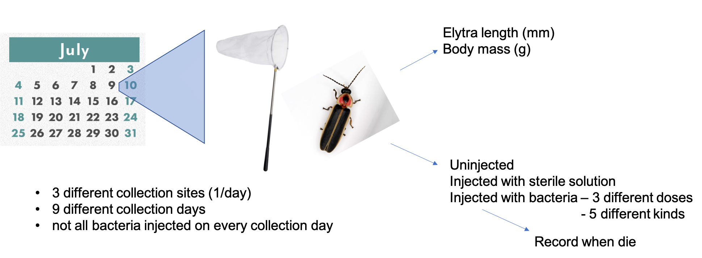

P. pyralis adult infection survival: infection analysis
Moria Chambers + Sarah Lower
2022-09-26
Goal: Test if infection by 5 different bacteria, each at 3 different doses, affect the survival of P. pyralis fireflies
Study design:

Abbreviations:
- Sm = Serratia marcescens DB1140
- Ps = Providencia sneebia
- Pr = Providencia rettgeri
- Pa = Pseudomonas aeruginosa
- Ef = Enterrococcus faecalis
Step 1: Ready the workspace
#clear all inputs
rm(list = ls())
#Check for necessary packages
list.of.packages <- c("survival",
"survminer",
"ggplot2",
"tidyr",
"dplyr",
"Hmisc",
"qqplotr",
"ggthemes",
"fabricatr",
"gridExtra",
"grid",
"kableExtra",
"sjPlot",
"cowplot",
"ggpubr",
"patchwork",
"magick", #so you can use the savekable function
"webshot", #so you can use the savekable function
"lme4",
"RcppEigen",
"SciViews",
"coxme")
#should install packages that you don't have
new.packages <- list.of.packages[!(list.of.packages %in% installed.packages()[,"Package"])]
if(length(new.packages)) install.packages(new.packages)
#Load the package that contains the Cox Propotional Hazard Function
library(survival)
library(ggplot2)
library(tidyr)
library(dplyr)
library(Hmisc)
library(qqplotr)
library(ggthemes)
library(fabricatr)
library(survminer)
library(gridExtra)
library(grid)
library(kableExtra)
library(sjPlot)
library(cowplot)
library(ggpubr)
library(patchwork)
library(SciViews)
library(coxme)Step 2: Import the data
#This imports the data from a CSV file
Adult_Final<-read.table("2021_Adult_Firefly_Survival_binned3.csv", header=TRUE, sep=",", dec=".",na.strings=".")
#add Condition variables
Adult_Final$Condition <- Adult_Final$Mass/Adult_Final$ElytralLength
Adult_Final$LogCondition <- log(Adult_Final$Condition)
# Add a numeric version of location variable for random effects moodels
Adult_Final$Location2 <- as.numeric(factor(Adult_Final$Location))
#This sets up the color palette using tableau20: https://jrnold.github.io/ggthemes/reference/tableau_color_pal.html
site_colors <- c("USA: Montour Co, Bucknell Natural Area" = "#4E79A7",
"USA: Union Co, Bucknell Farm" = "#F28E2B",
"USA: Union Co, Bucknell Ropes Course" = "#E15759")Step 3: Individual Infections
Note: All infections are examined relative to sterile saline injection (PBS) controls.
Serratia marcescens
Q1. Do Sm infected flies die more than controls and is mortality due to Sm impacted by Condition and season day?
Subset based on dates that Sm was used, then only retained Sm infected flies and sterile saline control to serve as a baseline.
- Note: The subset has 256 fireflies
Same order for these models as uninfected
Initial analysis with Treatment only indicated that this factor had time-dependence using Schoenfeld Residuals (p = 0.0042). Based on plot of survival based on Treatment, we decided not to stratify as it was overall relatively flat.
CONCLUSIONS:
Based on the full model, as expected, covariates Condition and Season Day all have a significant impact on survival (p << 0.001). Treatment significantly impacted survival (p << 0.0001). Neither interaction term was significant.
Model reduction using step-wise removal of factors based on their impact on the log likelihood of the model, resulted in a more streamlined model:
- Survival ~ Condition + SeasonDay + Treatment + Condition:Treatment
As expected, covariates Condition and Season Day all have a significant impact on survival (p << 0.001). Treatment significantly impacted survival (p << 0.0001). While Condition x Treatment was was not significant (p = 0.055), it was retained in the model due to having a p-value close to 0.05. Season Day displayed borderline time-dependence based on Schoenfeld residuals (p = 0.047)
Only SeasonDay, Treatment_Sm_5.0 and Condition:Treatment_Sm_5.0 had B-coefficients that were significantly different from zero (p = 0.0001, p = 0.001, and p = 0.02 respectively). For SeasonDay the HR = 1.044 (95% confidence interval: 1.025-1.064), meaning that the later in the season there is a higher risk of death. For Treatments - Sm - 5.0 the HR = 40.10 (95% confidence interval 4.5-355.3) meaning that fireflies infected with this infectious dose had a higher risk of death. For Condition:Treatment_Sm_5.0 and the B-coeff was negative (-726.6) indicating that being in good condition provided additional benefit for those fireflies.
#subset the data to include only dates where Sm infection was administered
Adult_Sm_date<-subset(Adult_Final, CollectionDate=="28-Jun"|CollectionDate=="29-Jun"|CollectionDate=="30-Jun"|CollectionDate=="6-Jul"|CollectionDate=="14-Jul"|CollectionDate=="27-Jul"|CollectionDate=="28-Jul"|CollectionDate=="2-Aug")
#subset that data to only include PBS controls and Sm infected fireflies for coxph analysis
Adult_Sm<-subset(Adult_Sm_date,BacterialSpecies=="02_PBS"|BacterialSpecies=="04_Smarc")Treatment only analysis
modelSm_uni <- coxph(Surv(Days_post_infection, Status) ~ Treatment, data = Adult_Sm)
summary(modelSm_uni)## Call:
## coxph(formula = Surv(Days_post_infection, Status) ~ Treatment,
## data = Adult_Sm)
##
## n= 256, number of events= 188
##
## coef exp(coef) se(coef) z Pr(>|z|)
## Treatment04_Sm_0.1 -0.2480 0.7804 0.2269 -1.093 0.274
## Treatment04_Sm_1.0 0.1831 1.2009 0.1986 0.922 0.357
## Treatment04_Sm_5.0 1.1329 3.1048 0.2010 5.636 1.74e-08 ***
## ---
## Signif. codes: 0 '***' 0.001 '**' 0.01 '*' 0.05 '.' 0.1 ' ' 1
##
## exp(coef) exp(-coef) lower .95 upper .95
## Treatment04_Sm_0.1 0.7804 1.2815 0.5002 1.217
## Treatment04_Sm_1.0 1.2009 0.8327 0.8137 1.773
## Treatment04_Sm_5.0 3.1048 0.3221 2.0938 4.604
##
## Concordance= 0.66 (se = 0.025 )
## Likelihood ratio test= 39.88 on 3 df, p=1e-08
## Wald test = 45.51 on 3 df, p=7e-10
## Score (logrank) test = 49.83 on 3 df, p=9e-11- ANOVA - Treatment only analysis
#anova
t <- anova(modelSm_uni)
#set some formatting before using cable (num digits to display, bolding based on significance)
t[,4] = round(t[,4], digits = 10)
row.names(t) = cell_spec(row.names(t), bold = ifelse(t[,4] < 0.05, "TRUE", "FALSE"))
t[,4] = cell_spec(t[,4], bold = ifelse(t[,4] < 0.05, "TRUE", "FALSE"))
#make nice table with kable
kbl(t, escape = FALSE, digits = c(2, 2, 2, 3)) %>%
kable_classic(full_width = F, html_font = "Cambria", position = "center")| loglik | Chisq | Df | Pr(>|Chi|) | |
|---|---|---|---|---|
| NULL | -816.71 | NA | NA | NA |
| Treatment | -796.77 | 39.88 | 3 | 1.13e-08 |
- Checking model assumptions for Treatment (beta coef = flat)
#check to see if there is time-dependence of treatment = yes! Need to stratify treatment. Split at d3 based on Chambers 2019.
fitSm_uni <- cox.zph(modelSm_uni, transform="km", global=TRUE)
print(fitSm_uni)## chisq df p
## Treatment 13.2 3 0.0042
## GLOBAL 13.2 3 0.0042plot(fitSm_uni)
- Conclusion
- There is a time-dependence to treatment for S. marcescens infected fireflies
- However, overall it is still relatively flat and we decided to proceed with the multivariable analysis to see how it behaved once the co-variates were taken into account.
multivariable analysis
- Check whether Location should be included as a random effect.
#full model - Fixed effects only
modelSm_full <- coxph(Surv(Days_post_infection, Status) ~ Condition + SeasonDay + Treatment+Condition:Treatment+SeasonDay:Treatment, data = Adult_Sm)
# full model with random effect for location
modelSm_full_random <- coxme(Surv(Days_post_infection, Status) ~ Condition + SeasonDay + Treatment+Condition:Treatment+SeasonDay:Treatment + + (1|Location2), data = Adult_Sm)
# Check whether location as random effect improved model fit
anova(modelSm_full_random, modelSm_full)## Analysis of Deviance Table
## Cox model: response is Surv(Days_post_infection, Status)
## Model 1: ~Condition + SeasonDay + Treatment + Condition:Treatment + SeasonDay:Treatment + +(1 | Location2)
## Model 2: ~Condition + SeasonDay + Treatment + Condition:Treatment + SeasonDay:Treatment
## loglik Chisq Df P(>|Chi|)
## 1 -768
## 2 -768 0.0058 1 0.9395- Conclusion
- Location as a random effect does not improve model fit. Not keeping it in future models.
- Summary - multivariable analysis
#full model - Fixed effects only
summary(modelSm_full)## Call:
## coxph(formula = Surv(Days_post_infection, Status) ~ Condition +
## SeasonDay + Treatment + Condition:Treatment + SeasonDay:Treatment,
## data = Adult_Sm)
##
## n= 256, number of events= 188
##
## coef exp(coef) se(coef) z
## Condition -4.515e+02 7.861e-197 2.226e+02 -2.029
## SeasonDay 2.342e-02 1.024e+00 1.829e-02 1.281
## Treatment04_Sm_0.1 4.452e-01 1.561e+00 1.247e+00 0.357
## Treatment04_Sm_1.0 -8.376e-01 4.327e-01 1.227e+00 -0.683
## Treatment04_Sm_5.0 3.396e+00 2.986e+01 1.293e+00 2.626
## Condition:Treatment04_Sm_0.1 -4.108e+02 3.907e-179 3.346e+02 -1.228
## Condition:Treatment04_Sm_1.0 7.833e+01 1.038e+34 3.080e+02 0.254
## Condition:Treatment04_Sm_5.0 -6.543e+02 6.985e-285 3.231e+02 -2.025
## SeasonDay:Treatment04_Sm_0.1 4.373e-02 1.045e+00 2.906e-02 1.505
## SeasonDay:Treatment04_Sm_1.0 4.304e-02 1.044e+00 2.269e-02 1.897
## SeasonDay:Treatment04_Sm_5.0 2.983e-03 1.003e+00 2.288e-02 0.130
## Pr(>|z|)
## Condition 0.04249 *
## SeasonDay 0.20025
## Treatment04_Sm_0.1 0.72106
## Treatment04_Sm_1.0 0.49489
## Treatment04_Sm_5.0 0.00864 **
## Condition:Treatment04_Sm_0.1 0.21953
## Condition:Treatment04_Sm_1.0 0.79923
## Condition:Treatment04_Sm_5.0 0.04289 *
## SeasonDay:Treatment04_Sm_0.1 0.13243
## SeasonDay:Treatment04_Sm_1.0 0.05787 .
## SeasonDay:Treatment04_Sm_5.0 0.89625
## ---
## Signif. codes: 0 '***' 0.001 '**' 0.01 '*' 0.05 '.' 0.1 ' ' 1
##
## exp(coef) exp(-coef) lower .95 upper .95
## Condition 7.861e-197 1.272e+196 0.000e+00 2.267e-07
## SeasonDay 1.024e+00 9.769e-01 9.877e-01 1.061e+00
## Treatment04_Sm_0.1 1.561e+00 6.407e-01 1.355e-01 1.798e+01
## Treatment04_Sm_1.0 4.327e-01 2.311e+00 3.905e-02 4.795e+00
## Treatment04_Sm_5.0 2.986e+01 3.349e-02 2.366e+00 3.767e+02
## Condition:Treatment04_Sm_0.1 3.907e-179 2.560e+178 0.000e+00 2.465e+106
## Condition:Treatment04_Sm_1.0 1.038e+34 9.630e-35 7.666e-229 1.407e+296
## Condition:Treatment04_Sm_5.0 6.985e-285 1.432e+284 0.000e+00 8.105e-10
## SeasonDay:Treatment04_Sm_0.1 1.045e+00 9.572e-01 9.869e-01 1.106e+00
## SeasonDay:Treatment04_Sm_1.0 1.044e+00 9.579e-01 9.986e-01 1.091e+00
## SeasonDay:Treatment04_Sm_5.0 1.003e+00 9.970e-01 9.590e-01 1.049e+00
##
## Concordance= 0.751 (se = 0.02 )
## Likelihood ratio test= 97.42 on 11 df, p=6e-16
## Wald test = 97.16 on 11 df, p=6e-16
## Score (logrank) test = 116.1 on 11 df, p=<2e-16- ANOVA - multivariable analysis
t <- anova(modelSm_full)
rownames(t) <- c("NULL","Condition", "Season Day", "Treatment", "Condition:Treatment", "Season Day:Treatment")
kbl(t) %>%
kable_classic(full_width = F, html_font = "Cambria", position = "center")| loglik | Chisq | Df | Pr(>|Chi|) | |
|---|---|---|---|---|
| NULL | -816.7066 | NA | NA | NA |
| Condition | -805.0122 | 23.388945 | 1 | 0.0000013 |
| Season Day | -795.2037 | 19.616894 | 1 | 0.0000095 |
| Treatment | -774.8076 | 40.792164 | 3 | 0.0000000 |
| Condition:Treatment | -771.0230 | 7.569370 | 3 | 0.0558026 |
| Season Day:Treatment | -767.9980 | 6.049824 | 3 | 0.1092112 |
- Checking model assumptions (beta coef = flat) - multivariable analysis
#Check to see how the model looks - does it fulfill assumptions
fitSm_full<-cox.zph(modelSm_full, transform="km", global=TRUE)
print(fitSm_full)## chisq df p
## Condition 0.369 1 0.5433
## SeasonDay 1.941 1 0.1636
## Treatment 8.555 3 0.0358
## Condition:Treatment 10.734 3 0.0133
## SeasonDay:Treatment 6.671 3 0.0832
## GLOBAL 27.765 11 0.0035plot(fitSm_full)


Reduced multivariable analysis
- Model reduction to allow calculation of more useful Hazard Ratios - multivariable analysis
Note: Full stepwise reduction not shown. Only the final reduced model is presented. + Summary - Reduced multivariable analysis
#removal of Condition:Treatment to allow us to get more accurate HRs for specific situations (predictive modeling
modelSm_redux <- coxph(Surv(Days_post_infection, Status) ~ Condition + SeasonDay + Treatment + Condition:Treatment, data = Adult_Sm)
summary(modelSm_redux)## Call:
## coxph(formula = Surv(Days_post_infection, Status) ~ Condition +
## SeasonDay + Treatment + Condition:Treatment, data = Adult_Sm)
##
## n= 256, number of events= 188
##
## coef exp(coef) se(coef) z
## Condition -3.680e+02 1.555e-160 2.153e+02 -1.709
## SeasonDay 4.343e-02 1.044e+00 9.455e-03 4.593
## Treatment04_Sm_0.1 1.163e+00 3.200e+00 1.128e+00 1.031
## Treatment04_Sm_1.0 1.042e-01 1.110e+00 1.092e+00 0.095
## Treatment04_Sm_5.0 3.691e+00 4.010e+01 1.113e+00 3.317
## Condition:Treatment04_Sm_0.1 -4.052e+02 1.034e-176 3.181e+02 -1.274
## Condition:Treatment04_Sm_1.0 3.022e+01 1.329e+13 3.017e+02 0.100
## Condition:Treatment04_Sm_5.0 -7.266e+02 2.728e-316 3.173e+02 -2.290
## Pr(>|z|)
## Condition 0.087436 .
## SeasonDay 4.37e-06 ***
## Treatment04_Sm_0.1 0.302349
## Treatment04_Sm_1.0 0.923954
## Treatment04_Sm_5.0 0.000911 ***
## Condition:Treatment04_Sm_0.1 0.202674
## Condition:Treatment04_Sm_1.0 0.920221
## Condition:Treatment04_Sm_5.0 0.022031 *
## ---
## Signif. codes: 0 '***' 0.001 '**' 0.01 '*' 0.05 '.' 0.1 ' ' 1
##
## exp(coef) exp(-coef) lower .95 upper .95
## Condition 1.555e-160 6.430e+159 0.000e+00 2.877e+23
## SeasonDay 1.044e+00 9.575e-01 1.025e+00 1.064e+00
## Treatment04_Sm_0.1 3.200e+00 3.125e-01 3.509e-01 2.918e+01
## Treatment04_Sm_1.0 1.110e+00 9.010e-01 1.306e-01 9.428e+00
## Treatment04_Sm_5.0 4.010e+01 2.494e-02 4.527e+00 3.553e+02
## Condition:Treatment04_Sm_0.1 1.034e-176 9.675e+175 0.000e+00 5.796e+94
## Condition:Treatment04_Sm_1.0 1.329e+13 7.526e-14 2.029e-244 8.700e+269
## Condition:Treatment04_Sm_5.0 2.728e-316 Inf 0.000e+00 3.464e-46
##
## Concordance= 0.743 (se = 0.02 )
## Likelihood ratio test= 91.37 on 8 df, p=2e-16
## Wald test = 94.47 on 8 df, p=<2e-16
## Score (logrank) test = 111.2 on 8 df, p=<2e-16- ANOVA - Reduced multivariable analysis
#anova
t <- anova(modelSm_redux)
#set some formatting before using cable (num digits to display, bolding based on significance)
t[,4] = round(t[,4], digits = 10)
row.names(t) = cell_spec(row.names(t), bold = ifelse(t[,4] < 0.05, "TRUE", "FALSE"))
t[,4] = cell_spec(t[,4], bold = ifelse(t[,4] < 0.05, "TRUE", "FALSE"))
#make nice table with kable
kbl(t, escape = FALSE, digits = c(2, 2, 2, 3)) %>%
kable_classic(full_width = F, html_font = "Cambria", position = "center")| loglik | Chisq | Df | Pr(>|Chi|) | |
|---|---|---|---|---|
| NULL | -816.71 | NA | NA | NA |
| Condition | -805.01 | 23.39 | 1 | 1.3234e-06 |
| SeasonDay | -795.20 | 19.62 | 1 | 9.4629e-06 |
| Treatment | -774.81 | 40.79 | 3 | 7.2e-09 |
| Condition:Treatment | -771.02 | 7.57 | 3 | 0.05580258 |
- Checking model assumptions (beta coef = flat) - reduced multivariable
#Check to see how the model looks - does it fulfill assumptions
fitSm_redux<-cox.zph(modelSm_redux, transform="km", global=TRUE)
print(fitSm_redux)## chisq df p
## Condition 0.396 1 0.5293
## SeasonDay 0.408 1 0.5228
## Treatment 6.938 3 0.0739
## Condition:Treatment 7.685 3 0.0530
## GLOBAL 21.807 8 0.0053- Comparison of reduced multivariable model to full multivariable model
anova(modelSm_full, modelSm_redux) #does removing condition:treatment significantly weaken model? No.## Analysis of Deviance Table
## Cox model: response is Surv(Days_post_infection, Status)
## Model 1: ~ Condition + SeasonDay + Treatment + Condition:Treatment + SeasonDay:Treatment
## Model 2: ~ Condition + SeasonDay + Treatment + Condition:Treatment
## loglik Chisq Df Pr(>|Chi|)
## 1 -768.00
## 2 -771.02 6.0498 3 0.1092- CONCLUSION
- Removal of non-significant terms does not weaken the model
- Comparison of reduced multivariable model to Treatment only model
anova(modelSm_redux,modelSm_uni) #Does including the covariates improve fit? Yes, including co-variates results in a significantly better model## Analysis of Deviance Table
## Cox model: response is Surv(Days_post_infection, Status)
## Model 1: ~ Condition + SeasonDay + Treatment + Condition:Treatment
## Model 2: ~ Treatment
## loglik Chisq Df Pr(>|Chi|)
## 1 -771.02
## 2 -796.77 51.49 5 6.864e-10 ***
## ---
## Signif. codes: 0 '***' 0.001 '**' 0.01 '*' 0.05 '.' 0.1 ' ' 1- CONCLUSION
- Addition of covariates significantly improves the model
Individual factor plots
Treatment
- Sample Size:
t <- data.frame(table(Adult_Sm$Treatment))
t$Var1 <- c("PBS", "Sm Abs600nm 0.1", "Sm Abs600nm 1.0", "Sm Abs600nm 5.0")
colnames(t) <- c("Treatment", "n")
kbl(t) %>%
kable_classic(full_width = F, html_font = "Cambria", position = "center")| Treatment | n |
|---|---|
| PBS | 94 |
| Sm Abs600nm 0.1 | 35 |
| Sm Abs600nm 1.0 | 59 |
| Sm Abs600nm 5.0 | 68 |
- Plot - Treatment:
legend_size <- 1.4
#png(file="pyralis_Smarc_DB1140.png",width=2972,height=1960, units = "px", res=400)
par(mar=c(6,6,1,1)) #sets the margins around the graph so there is room for the labels
plot(survfit(Surv(Days_post_infection,Status)~Treatment, data=Adult_Sm),
col=c( "black", "#D4A6C8","#B07AA1","#8B537B"),
lty=c(1, 1, 2, 3),
lwd=5, #line width
yaxt='n',
xaxt='n',
ylab="Proportion alive", #label for the y-axis
xlab="Days post-treatment", #label for the x-axis
cex.lab=2.5, #font size of axis labels
xlim=c(0,25), #determines range of the x-axis
xaxs='i') #makes the data flush with the axis
axis(2, #left side
las=3, #perpendicular to the axis
cex.axis=2, #font size
lwd=5) #line width
axis(1, #bottom of the graph
cex.axis=2, #font size
lwd=5) #line width
box(lwd=5)
legend("topright", bty="n" , c("Sterile saline (n=94)","0.1 Sm (n=35)","1.0 Sm (n=59)","5.0 Sm (n=68)"),col=c("black", "#D4A6C8","#B07AA1","#8B537B"), lty=c( 1, 1, 2, 3),lwd=5, cex=legend_size)
#dev.off()Alternative Plot - SeasonDay separate
- Sample size:
#make SD categories
Adult_Sm$SDcategory<- cut(Adult_Sm$SeasonDay, breaks = c(5, 18, Inf))
#make SD by treatment variable
Adult_Sm$SD_Treatment<-paste(Adult_Sm$SDcategory, Adult_Sm$Treatment, sep="_")
#unique(Adult_Sm$SD_Treatment)
Adult_Sm$SD_Treatment <- factor(Adult_Sm$SD_Treatment, levels=c("(5,18]_02_PBS ", "(5,18]_04_Sm_0.1 ", "(5,18]_04_Sm_1.0", "(5,18]_04_Sm_5.0", "(18,Inf]_02_PBS ", "(18,Inf]_04_Sm_0.1 ", "(18,Inf]_04_Sm_1.0", "(18,Inf]_04_Sm_5.0"))
t <- data.frame(table(Adult_Sm$SD_Treatment))
t$Var1 <- c("Early, PBS", "Early, 0.1 S. marcescens", "Early, 1.0 S. marcescens", "Early, 5.0 S. marcescens", "Late, PBS", "Late, 0.1 S. marcescens", "Late, 1.0 S. marcescens", "Late, 5.0 S. marcescens")
colnames(t) <- c("Treatment", "n")
kbl(t) %>%
kable_classic(full_width = F, html_font = "Cambria", position = "center")| Treatment | n |
|---|---|
| Early, PBS | 40 |
| Early, 0.1 S. marcescens | 30 |
| Early, 1.0 S. marcescens | 35 |
| Early, 5.0 S. marcescens | 32 |
| Late, PBS | 54 |
| Late, 0.1 S. marcescens | 5 |
| Late, 1.0 S. marcescens | 24 |
| Late, 5.0 S. marcescens | 36 |
+ Plotinteraction_legend_size = 1.4
Adult_Sm_Early <- Adult_Sm[Adult_Sm$SDcategory == "(5,18]",]
Adult_Sm_Late <- Adult_Sm[Adult_Sm$SDcategory == "(18,Inf]",]
#early
#png(file="Survival_Treatment_Sm_Early.png",width=2972,height=1960,units = "px", res=400)
par(mar=c(6,6,1,1)) #sets the margins around the graph so there is room for the labels
plot(survfit(Surv(Days_post_infection,Status)~Treatment, data=Adult_Sm_Early),
col= c("black", "#D4A6C8","#B07AA1","#8B537B"),
lty=rep(1, 4),
lwd=5, #line width
yaxt='n',
xaxt='n',
ylab="Proportion alive", #label for the y-axis
xlab="Days post-treatment", #label for the x-axis
cex.lab=2.5, #font size ofange of the x-axis
xlim=c(0,25),
xaxs='i') #makes the data flush with the axis
axis(2, #left side
las=3, #perpendicular to the axis
cex.axis=2, #font size
lwd=5) #line width
axis(1, #bottom of the graph
cex.axis=2, #font size
lwd=5) #line width
box(lwd=5)
legend("topright", bty="n" , c("Early, Sterile saline (n=40)", "Early, 0.1 Sm (n=30)", "Early, 1.0 Sm (n=35)", "Early, 5.0 Sm (n=32)"), col=c("black", "#D4A6C8","#B07AA1","#8B537B"), lty=rep(1, 4), lwd=5, cex=interaction_legend_size)
#dev.off()
#late
#png(file="Survival_Treatment_Sm_Late.png",width=2972,height=1960,units = "px", res=400)
par(mar=c(6,6,1,1)) #sets the margins around the graph so there is room for the labels
plot(survfit(Surv(Days_post_infection,Status)~Treatment, data=Adult_Sm_Late),
col= c("black", "#D4A6C8","#B07AA1","#8B537B"),
lty=rep(1, 4),
lwd=5, #line width
yaxt='n',
xaxt='n',
ylab="Proportion alive", #label for the y-axis
xlab="Days post-treatment", #label for the x-axis
cex.lab=2.5, #font size ofange of the x-axis
xlim=c(0,25),
xaxs='i') #makes the data flush with the axis
axis(2, #left side
las=3, #perpendicular to the axis
cex.axis=2, #font size
lwd=5) #line width
axis(1, #bottom of the graph
cex.axis=2, #font size
lwd=5) #line width
box(lwd=5)
legend("topright", bty="n" , c("Late, Sterile saline (n=54)", "Late, 0.1 Sm (n=5)", "Late, 1.0 Sm (n=24)", "Late, 5.0 Sm (n=36)"), col=c("black", "#D4A6C8","#B07AA1","#8B537B"), lty=rep(1, 4), lwd=5, cex=interaction_legend_size)
#dev.off()Calculating Hazard ratios for different infected firefly classes
- Extract the coefficients and define the function to compare hazard ratios among two exemplar fireflies
#what object -> reduced model
#length(modelSm_redux$coefficients) #there are 11 coefficients
condition_coef <- modelSm_redux$coefficients[1]
seasonday_coef <- modelSm_redux$coefficients[2]
Sm0.1_coef <- modelSm_redux$coefficients[3]
Sm1.0_coef <- modelSm_redux$coefficients[4]
Sm5.0_coef <- modelSm_redux$coefficients[5]
Condition_Sm0.1_coef <- modelSm_redux$coefficients[6]
Condition_Sm1.0_coef <- modelSm_redux$coefficients[7]
Condition_Sm5.0_coef <- modelSm_redux$coefficients[8]
calc_HR_Sm_infection <- function(avg_cond1, SD1, Sm0.1_cat1, Sm1.0_cat1, Sm5.0_cat1, avg_cond2, SD2, Sm0.1_cat2, Sm1.0_cat2, Sm5.0_cat2){
H_for_firefly1 = exp(condition_coef*avg_cond1 +
seasonday_coef*SD1 +
Sm0.1_coef*Sm0.1_cat1 +
Sm1.0_coef*Sm1.0_cat1 +
Sm5.0_coef*Sm5.0_cat1 +
Condition_Sm0.1_coef*avg_cond1*Sm0.1_cat1 +
Condition_Sm1.0_coef*avg_cond1*Sm1.0_cat1 +
Condition_Sm5.0_coef*avg_cond1*Sm5.0_cat1)
H_for_firefly2 = exp(condition_coef*avg_cond2 +
seasonday_coef*SD2 +
Sm0.1_coef*Sm0.1_cat2 +
Sm1.0_coef*Sm1.0_cat2 +
Sm5.0_coef*Sm5.0_cat2 +
Condition_Sm0.1_coef*avg_cond2*Sm0.1_cat2 +
Condition_Sm1.0_coef*avg_cond2*Sm1.0_cat2 +
Condition_Sm5.0_coef*avg_cond2*Sm5.0_cat2)
HR = H_for_firefly2/H_for_firefly1
names(HR) <- NULL
return(HR)
}
coef.mat <- matrix(modelSm_redux$coefficients, nc=1)
vc.mat <- vcov(modelSm_redux)
calc_HR_CI_Sm_infection <- function(avg_cond1, SD1, Sm0.1_cat1, Sm1.0_cat1, Sm5.0_cat1, avg_cond2, SD2, Sm0.1_cat2, Sm1.0_cat2, Sm5.0_cat2){
cov.diff <- matrix(c(avg_cond2 - avg_cond1,
SD2 - SD1,
Sm0.1_cat2 - Sm0.1_cat1,
Sm1.0_cat2 - Sm1.0_cat1,
Sm5.0_cat2 - Sm5.0_cat1,
avg_cond2*Sm0.1_cat2 - avg_cond1*Sm0.1_cat1,
avg_cond2*Sm1.0_cat2 - avg_cond1*Sm1.0_cat1,
avg_cond2*Sm5.0_cat2 - avg_cond1*Sm5.0_cat1), nc=1)
log.HR <- t(cov.diff)%*%coef.mat
HR <- exp(log.HR)
names(HR) <- NULL
se.log.HR <- sqrt(t(cov.diff)%*%vc.mat%*%cov.diff)
names(se.log.HR) <- NULL
LCI.HR <- exp(log.HR - 1.96*se.log.HR)
UCI.HR <- exp(log.HR + 1.96*se.log.HR)
return(cat(paste0("HR = ", round(HR, 4),
", 95% CI = (",
round(LCI.HR,4),
", ",
round(UCI.HR,4),
")")
)
)
}- Hazard for fireflies in Sm0.1 vs PBS (day 20)
calc_HR_Sm_infection(avg_cond1 = 0.0035,
SD1 = 20,
Sm0.1_cat1 = 0,
Sm1.0_cat1 = 0,
Sm5.0_cat1 = 0,
avg_cond2 = 0.0035,
SD2 = 20,
Sm0.1_cat2 = 1, #in the 0.1 infection category
Sm1.0_cat2 = 0,
Sm5.0_cat2 = 0)## [1] 0.7748115calc_HR_CI_Sm_infection(avg_cond1 = 0.0035,
SD1 = 20,
Sm0.1_cat1 = 0,
Sm1.0_cat1 = 0,
Sm5.0_cat1 = 0,
avg_cond2 = 0.0035,
SD2 = 20,
Sm0.1_cat2 = 1, #in the 0.1 infection category
Sm1.0_cat2 = 0,
Sm5.0_cat2 = 0)## HR = 0.7748, 95% CI = (0.4906, 1.2237)- Hazard for fireflies in Sm1.0 vs PBS (day 20)
calc_HR_Sm_infection(avg_cond1 = 0.0035,
SD1 = 20,
Sm0.1_cat1 = 0,
Sm1.0_cat1 = 0,
Sm5.0_cat1 = 0,
avg_cond2 = 0.0035,
SD2 = 20,
Sm0.1_cat2 = 0,
Sm1.0_cat2 = 1, #in the 1.0 infection category
Sm5.0_cat2 = 0)## [1] 1.233627calc_HR_CI_Sm_infection(avg_cond1 = 0.0035,
SD1 = 20,
Sm0.1_cat1 = 0,
Sm1.0_cat1 = 0,
Sm5.0_cat1 = 0,
avg_cond2 = 0.0035,
SD2 = 20,
Sm0.1_cat2 = 0,
Sm1.0_cat2 = 1, #in the 1.0 infection category
Sm5.0_cat2 = 0)## HR = 1.2336, 95% CI = (0.8316, 1.8301)- Hazard for fireflies in Sm5.0 vs PBS (day 20)
calc_HR_Sm_infection(avg_cond1 = 0.0035,
SD1 = 20,
Sm0.1_cat1 = 0,
Sm1.0_cat1 = 0,
Sm5.0_cat1 = 0,
avg_cond2 = 0.0035,
SD2 = 20,
Sm0.1_cat2 = 0,
Sm1.0_cat2 = 0,
Sm5.0_cat2 = 1)## [1] 3.15287calc_HR_CI_Sm_infection(avg_cond1 = 0.0035,
SD1 = 20,
Sm0.1_cat1 = 0,
Sm1.0_cat1 = 0,
Sm5.0_cat1 = 0,
avg_cond2 = 0.0035,
SD2 = 20,
Sm0.1_cat2 = 0,
Sm1.0_cat2 = 0,
Sm5.0_cat2 = 1)## HR = 3.1529, 95% CI = (2.0884, 4.7598)- Treatment Hazard plot (for fireflies in avg condition at Day 20 in the season, relative to identical firefly injected with PBS)
HR_tbl_Sm <- tibble(Category = c(1,2,3),
Treatment = c("0.1 Sm", "1.0 Sm", "5.0 Sm"),
HR = c(0.77, 1.23, 3.15),
LCI = c(0.49, 0.83, 2.09),
HCI = c(1.22, 1.83, 4.76))
#png(file="pyralis_Smarc_DB1140_HR.png",width=2972,height=1960, units = "px", res=400)
par(mar=c(6,6,1,1)) #sets the margins around the graph so there is room for the labels
boxplot(HR ~ Treatment, data = data.frame(HR_tbl_Sm), border=c("#D4A6C8","#B07AA1","#8B537B"), boxlwd = 8, yaxt='n',
xaxt='n',
ylab="Hazard Ratio", #label for the y-axis
xlab="Treatment", #label for the x-axis
cex.lab=2.5, #font size of axis labels
ylim=c(0,8),
xlim=c(0.5,3.5), #determines range of the x-axis
xaxs='i') #makes the data flush with the axis)
arrows(x0=HR_tbl_Sm$Category,
y0=HR_tbl_Sm$LCI,
x1=HR_tbl_Sm$Category,
y1=HR_tbl_Sm$HCI,
code=3,
col=c("#D4A6C8","#B07AA1","#8B537B"),
lwd=5,
angle = 90,
length = 0.1,
#lty = c(1,2,3),
)
axis(2, #left side
las=3, #perpendicular to the axis
cex.axis=2, #font size
lwd=5) #line width
axis(1, #bottom of the graph
cex.axis=2, #font size
lwd=5,
at=c(1,2,3),
labels = c("0.1 Sm", "1.0 Sm", "5.0 Sm")
) #line width
box(lwd=5)#dev.off()Providencia rettgeri
Q1. Do Pr infected flies die more than controls and is mortality due to Pr impacted by Condition and Season Day?
#subset the data to include only dates where Pr infection was administered
Adult_Pr_date<-subset(Adult_Final, CollectionDate=="10-Jul"|CollectionDate=="12-Jul"|CollectionDate=="14-Jul"|CollectionDate=="19-Jul"|CollectionDate=="2-Aug")
#subset that data to only include PBS controls and Pr infected fireflies for coxph analysis
Adult_Pr<-subset(Adult_Pr_date,BacterialSpecies=="02_PBS"|BacterialSpecies=="05_Prett")
#nrow(Adult_Pr)Subset based on dates that Pr was used, then only retained Pr infected flies and sterile saline control to serve as a baseline.
- Note: Based on 213 fireflies
Initial analysis with Treatment only indicated that this factor does not have time-dependence and so proceeded with multi-variate analysis.
Same order of covariates for these models as uninfected
CONCLUSION:
Based on the full model, as expected, covariates Condition and Season Day all have a significant impact on survival (p << 0.001 and p = 0.016 respectively). Treatment significantly impacted survival (p = 0.0007). The only interaction term that is significant is SeasonDay x Treatment (p = 0.04).
Model reduction using step-wise removal of factors based on their impact on the log likelihood of the model, resulted in a more streamlined model:
- Survival ~ Condition + SeasonDay + Treatment + SeasonDay:Treatment
Treatment only analysis
- Summary - Treatment only analysis
modelPr_uni <- coxph(Surv(Days_post_infection, Status) ~ Treatment, data = Adult_Pr)
summary(modelPr_uni)## Call:
## coxph(formula = Surv(Days_post_infection, Status) ~ Treatment,
## data = Adult_Pr)
##
## n= 213, number of events= 184
##
## coef exp(coef) se(coef) z Pr(>|z|)
## Treatment05_Pr_0.1 -0.1647 0.8481 0.2079 -0.793 0.42801
## Treatment05_Pr_1.0 0.2938 1.3415 0.2005 1.465 0.14292
## Treatment05_Pr_5.0 0.5439 1.7228 0.2075 2.621 0.00877 **
## ---
## Signif. codes: 0 '***' 0.001 '**' 0.01 '*' 0.05 '.' 0.1 ' ' 1
##
## exp(coef) exp(-coef) lower .95 upper .95
## Treatment05_Pr_0.1 0.8481 1.1791 0.5643 1.275
## Treatment05_Pr_1.0 1.3415 0.7454 0.9055 1.987
## Treatment05_Pr_5.0 1.7228 0.5805 1.1470 2.587
##
## Concordance= 0.587 (se = 0.025 )
## Likelihood ratio test= 10.29 on 3 df, p=0.02
## Wald test = 10.8 on 3 df, p=0.01
## Score (logrank) test = 11.05 on 3 df, p=0.01- ANOVA - Treatment only analysis
#anova
t <- anova(modelPr_uni)
#set some formatting before using cable (num digits to display, bolding based on significance)
t[,4] = round(t[,4], digits = 10)
row.names(t) = cell_spec(row.names(t), bold = ifelse(t[,4] < 0.05, "TRUE", "FALSE"))
t[,4] = cell_spec(t[,4], bold = ifelse(t[,4] < 0.05, "TRUE", "FALSE"))
#make nice table with kable
kbl(t, escape = FALSE, digits = c(2, 2, 2, 3)) %>%
kable_classic(full_width = F, html_font = "Cambria", position = "center")| loglik | Chisq | Df | Pr(>|Chi|) | |
|---|---|---|---|---|
| NULL | -781.11 | NA | NA | NA |
| Treatment | -775.96 | 10.29 | 3 | 0.0162537521 |
- Checking model assumptions (beta coef = flat)
fitPr_uni<-cox.zph(modelPr_uni, transform="km", global=TRUE)
print(fitPr_uni)## chisq df p
## Treatment 3.36 3 0.34
## GLOBAL 3.36 3 0.34multivariable analysis
- Check whether Location should be included as a random effect
modelPr_full <- coxph(Surv(Days_post_infection, Status) ~ Condition + SeasonDay + Treatment + Condition:Treatment + SeasonDay:Treatment, data = Adult_Pr)
modelPr_full_random <- coxme(Surv(Days_post_infection, Status) ~ Condition + SeasonDay + Treatment + Condition:Treatment + SeasonDay:Treatment + (1|Location2), data = Adult_Pr)
anova(modelPr_full_random, modelPr_full)## Analysis of Deviance Table
## Cox model: response is Surv(Days_post_infection, Status)
## Model 1: ~Condition + SeasonDay + Treatment + Condition:Treatment + SeasonDay:Treatment + (1 | Location2)
## Model 2: ~Condition + SeasonDay + Treatment + Condition:Treatment + SeasonDay:Treatment
## loglik Chisq Df P(>|Chi|)
## 1 -745.61
## 2 -745.76 0.2826 1 0.595- Conclusion
- Location as a random effect does not improve model fit. Not keeping it in future models.
- Summary - multivariable analysis
summary(modelPr_full)## Call:
## coxph(formula = Surv(Days_post_infection, Status) ~ Condition +
## SeasonDay + Treatment + Condition:Treatment + SeasonDay:Treatment,
## data = Adult_Pr)
##
## n= 213, number of events= 184
##
## coef exp(coef) se(coef) z
## Condition -6.372e+02 1.779e-277 1.696e+02 -3.758
## SeasonDay 1.948e-02 1.020e+00 3.101e-02 0.628
## Treatment05_Pr_0.1 5.114e-01 1.668e+00 1.768e+00 0.289
## Treatment05_Pr_1.0 3.442e-01 1.411e+00 1.297e+00 0.265
## Treatment05_Pr_5.0 -1.343e+00 2.610e-01 1.694e+00 -0.793
## Condition:Treatment05_Pr_0.1 -1.487e+02 2.574e-65 3.020e+02 -0.492
## Condition:Treatment05_Pr_1.0 -2.562e+02 5.374e-112 2.750e+02 -0.932
## Condition:Treatment05_Pr_5.0 -2.575e+02 1.522e-112 3.526e+02 -0.730
## SeasonDay:Treatment05_Pr_0.1 -7.064e-03 9.930e-01 7.092e-02 -0.100
## SeasonDay:Treatment05_Pr_1.0 5.183e-02 1.053e+00 3.888e-02 1.333
## SeasonDay:Treatment05_Pr_5.0 1.854e-01 1.204e+00 6.677e-02 2.777
## Pr(>|z|)
## Condition 0.000171 ***
## SeasonDay 0.529887
## Treatment05_Pr_0.1 0.772425
## Treatment05_Pr_1.0 0.790741
## Treatment05_Pr_5.0 0.427839
## Condition:Treatment05_Pr_0.1 0.622436
## Condition:Treatment05_Pr_1.0 0.351570
## Condition:Treatment05_Pr_5.0 0.465228
## SeasonDay:Treatment05_Pr_0.1 0.920656
## SeasonDay:Treatment05_Pr_1.0 0.182468
## SeasonDay:Treatment05_Pr_5.0 0.005490 **
## ---
## Signif. codes: 0 '***' 0.001 '**' 0.01 '*' 0.05 '.' 0.1 ' ' 1
##
## exp(coef) exp(-coef) lower .95 upper .95
## Condition 1.779e-277 5.621e+276 0.000e+00 3.947e-133
## SeasonDay 1.020e+00 9.807e-01 9.595e-01 1.084e+00
## Treatment05_Pr_0.1 1.668e+00 5.997e-01 5.211e-02 5.336e+01
## Treatment05_Pr_1.0 1.411e+00 7.088e-01 1.110e-01 1.793e+01
## Treatment05_Pr_5.0 2.610e-01 3.832e+00 9.432e-03 7.222e+00
## Condition:Treatment05_Pr_0.1 2.574e-65 3.885e+64 2.075e-322 3.188e+192
## Condition:Treatment05_Pr_1.0 5.374e-112 1.861e+111 0.000e+00 6.920e+122
## Condition:Treatment05_Pr_5.0 1.522e-112 6.572e+111 0.000e+00 1.951e+188
## SeasonDay:Treatment05_Pr_0.1 9.930e-01 1.007e+00 8.641e-01 1.141e+00
## SeasonDay:Treatment05_Pr_1.0 1.053e+00 9.495e-01 9.759e-01 1.137e+00
## SeasonDay:Treatment05_Pr_5.0 1.204e+00 8.308e-01 1.056e+00 1.372e+00
##
## Concordance= 0.686 (se = 0.025 )
## Likelihood ratio test= 70.71 on 11 df, p=9e-11
## Wald test = 73.7 on 11 df, p=2e-11
## Score (logrank) test = 79.41 on 11 df, p=2e-12- ANOVA - multivariable analysis
#anova
t <- anova(modelPr_full)
#set some formatting before using cable (num digits to display, bolding based on significance)
t[,4] = round(t[,4], digits = 10)
row.names(t) = cell_spec(row.names(t), bold = ifelse(t[,4] < 0.05, "TRUE", "FALSE"))
t[,4] = cell_spec(t[,4], bold = ifelse(t[,4] < 0.05, "TRUE", "FALSE"))
#make nice table with kable
kbl(t, escape = FALSE, digits = c(2, 2, 2, 3)) %>%
kable_classic(full_width = F, html_font = "Cambria", position = "center")| loglik | Chisq | Df | Pr(>|Chi|) | |
|---|---|---|---|---|
| NULL | -781.11 | NA | NA | NA |
| Condition | -761.97 | 38.28 | 1 | 6e-10 |
| SeasonDay | -759.07 | 5.80 | 1 | 0.0160516802 |
| Treatment | -750.56 | 17.01 | 3 | 0.0007020922 |
| Condition:Treatment | -749.87 | 1.38 | 3 | 0.7093129742 |
| SeasonDay:Treatment | -745.76 | 8.23 | 3 | 0.0415030841 |
- Checking model assumptions (beta coef = flat)
fitPr_full<-cox.zph(modelPr_full, transform="km", global=TRUE)
print(fitPr_full)## chisq df p
## Condition 0.0308 1 0.86
## SeasonDay 0.3899 1 0.53
## Treatment 1.4991 3 0.68
## Condition:Treatment 2.1573 3 0.54
## SeasonDay:Treatment 1.7260 3 0.63
## GLOBAL 9.8830 11 0.54Reduced multivariable analysis
- Summary - Reduced multivariable analysis
Note: only the final reduced model is shown
modelPr_redux <- coxph(Surv(Days_post_infection, Status) ~ Condition + SeasonDay + Treatment + SeasonDay:Treatment, data = Adult_Pr)
summary(modelPr_redux)## Call:
## coxph(formula = Surv(Days_post_infection, Status) ~ Condition +
## SeasonDay + Treatment + SeasonDay:Treatment, data = Adult_Pr)
##
## n= 213, number of events= 184
##
## coef exp(coef) se(coef) z Pr(>|z|)
## Condition -7.587e+02 0.000e+00 1.220e+02 -6.221 4.95e-10
## SeasonDay 1.743e-02 1.018e+00 3.097e-02 0.563 0.57349
## Treatment05_Pr_0.1 -6.726e-02 9.350e-01 1.213e+00 -0.055 0.95577
## Treatment05_Pr_1.0 -6.490e-01 5.226e-01 7.355e-01 -0.882 0.37760
## Treatment05_Pr_5.0 -2.274e+00 1.029e-01 1.149e+00 -1.979 0.04785
## SeasonDay:Treatment05_Pr_0.1 -4.243e-03 9.958e-01 6.994e-02 -0.061 0.95162
## SeasonDay:Treatment05_Pr_1.0 5.654e-02 1.058e+00 3.858e-02 1.465 0.14283
## SeasonDay:Treatment05_Pr_5.0 1.851e-01 1.203e+00 6.621e-02 2.795 0.00519
##
## Condition ***
## SeasonDay
## Treatment05_Pr_0.1
## Treatment05_Pr_1.0
## Treatment05_Pr_5.0 *
## SeasonDay:Treatment05_Pr_0.1
## SeasonDay:Treatment05_Pr_1.0
## SeasonDay:Treatment05_Pr_5.0 **
## ---
## Signif. codes: 0 '***' 0.001 '**' 0.01 '*' 0.05 '.' 0.1 ' ' 1
##
## exp(coef) exp(-coef) lower .95 upper .95
## Condition 0.0000 Inf 0.00000 2.147e-226
## SeasonDay 1.0176 0.9827 0.95765 1.081e+00
## Treatment05_Pr_0.1 0.9350 1.0696 0.08680 1.007e+01
## Treatment05_Pr_1.0 0.5226 1.9136 0.12361 2.209e+00
## Treatment05_Pr_5.0 0.1029 9.7213 0.01081 9.787e-01
## SeasonDay:Treatment05_Pr_0.1 0.9958 1.0043 0.86820 1.142e+00
## SeasonDay:Treatment05_Pr_1.0 1.0582 0.9450 0.98110 1.141e+00
## SeasonDay:Treatment05_Pr_5.0 1.2033 0.8310 1.05686 1.370e+00
##
## Concordance= 0.691 (se = 0.025 )
## Likelihood ratio test= 69.6 on 8 df, p=6e-12
## Wald test = 70.45 on 8 df, p=4e-12
## Score (logrank) test = 75.1 on 8 df, p=5e-13- ANOVA - Reduced multivariable analysis
#anova
t <- anova(modelPr_redux)
#set some formatting before using cable (num digits to display, bolding based on significance)
t[,4] = round(t[,4], digits = 10)
row.names(t) = cell_spec(row.names(t), bold = ifelse(t[,4] < 0.05, "TRUE", "FALSE"))
t[,4] = cell_spec(t[,4], bold = ifelse(t[,4] < 0.05, "TRUE", "FALSE"))
#make nice table with kable
kbl(t, escape = FALSE, digits = c(2, 2, 2, 3)) %>%
kable_classic(full_width = F, html_font = "Cambria", position = "center")| loglik | Chisq | Df | Pr(>|Chi|) | |
|---|---|---|---|---|
| NULL | -781.11 | NA | NA | NA |
| Condition | -761.97 | 38.28 | 1 | 6e-10 |
| SeasonDay | -759.07 | 5.80 | 1 | 0.0160516802 |
| Treatment | -750.56 | 17.01 | 3 | 0.0007020922 |
| SeasonDay:Treatment | -746.31 | 8.51 | 3 | 0.0365727973 |
- Checking model assumptions (beta coef = flat)
fitPr_redux<-cox.zph(modelPr_redux, transform="km", global=TRUE)
print(fitPr_redux)## chisq df p
## Condition 0.277 1 0.60
## SeasonDay 0.331 1 0.57
## Treatment 1.409 3 0.70
## SeasonDay:Treatment 1.685 3 0.64
## GLOBAL 3.632 8 0.89- Comparison of reduced model to full model
anova(modelPr_full, modelPr_redux)## Analysis of Deviance Table
## Cox model: response is Surv(Days_post_infection, Status)
## Model 1: ~ Condition + SeasonDay + Treatment + Condition:Treatment + SeasonDay:Treatment
## Model 2: ~ Condition + SeasonDay + Treatment + SeasonDay:Treatment
## loglik Chisq Df Pr(>|Chi|)
## 1 -745.76
## 2 -746.31 1.1035 3 0.7762CONCLUSION
Removal of non-significant terms does not weaken the model
Comparison of reduced model to Treatment only model
anova(modelPr_redux,modelPr_uni)## Analysis of Deviance Table
## Cox model: response is Surv(Days_post_infection, Status)
## Model 1: ~ Condition + SeasonDay + Treatment + SeasonDay:Treatment
## Model 2: ~ Treatment
## loglik Chisq Df Pr(>|Chi|)
## 1 -746.31
## 2 -775.96 59.312 5 1.686e-11 ***
## ---
## Signif. codes: 0 '***' 0.001 '**' 0.01 '*' 0.05 '.' 0.1 ' ' 1- CONCLUSION
- Addition of co-variates significantly improves the model
Individual factor plots
Treatment
- Sample Size:
t <- data.frame(table(Adult_Pr$Treatment))
t$Var1 <- c("PBS", "Pr Abs600nm 0.1", "Pr Abs600nm 1.0", "Pr Abs600nm 5.0")
colnames(t) <- c("Treatment", "n")
kbl(t) %>%
kable_classic(full_width = F, html_font = "Cambria", position = "center")| Treatment | n |
|---|---|
| PBS | 93 |
| Pr Abs600nm 0.1 | 35 |
| Pr Abs600nm 1.0 | 51 |
| Pr Abs600nm 5.0 | 34 |
- Plot - Treatment:
#png(file="pyralis_Prett.png",width=2972,height=1960, units = "px", res=400)
par(mar=c(6,6,1,1)) #sets the margins around the graph so there is room for the labels
plot(survfit(Surv(Days_post_infection,Status)~Treatment, data=Adult_Pr),
col=c( "black", "#D4A6C8","#B07AA1","#8B537B"),
lty=c( 1, 1, 2, 3),
lwd=5, #line width
yaxt='n',
xaxt='n',
ylab="Proportion alive", #label for the y-axis
xlab="Days post-treatment", #label for the x-axis
cex.lab=2.5, #font size of axis labels
xlim=c(0,25), #determines range of the x-axis
xaxs='i') #makes the data flush with the axis
axis(2, #left side
las=3, #perpendicular to the axis
cex.axis=2, #font size
lwd=5) #line width
axis(1, #bottom of the graph
cex.axis=2, #font size
lwd=5) #line width
box(lwd=5)
legend("topright", bty="n" , c("Sterile saline (n=94)","0.1 Pr (n=35)","1.0 Pr (n=51)","5.0 Pr (n=34)"),col=c("black", "#D4A6C8","#B07AA1","#8B537B"), lty=c( 1, 1, 2, 3),lwd=5, cex=legend_size)
#dev.off()SeasonDay:Treatment interaction
SeasonDay sorted into two groups - early (collections on July 9, 13, 15, 17 - Season Days 1-18), late (collections on July 22, 23, 30, 31, 36 - Season Days 19-36)
Couldn’t do three groups because last two collections were truncated due to RNA collection.
Sample size:
#make SD categories
Adult_Pr$SDcategory<- cut(Adult_Pr$SeasonDay, breaks = c(5, 18, Inf))
#make SD by treatment variable
Adult_Pr$SD_Treatment<-paste(Adult_Pr$SDcategory, Adult_Pr$Treatment, sep="_")
Adult_Pr$SD_Treatment <- factor(Adult_Pr$SD_Treatment, levels=c("(5,18]_02_PBS ", "(5,18]_05_Pr_0.1", "(5,18]_05_Pr_1.0", "(5,18]_05_Pr_5.0", "(18,Inf]_02_PBS ", "(18,Inf]_05_Pr_0.1", "(18,Inf]_05_Pr_1.0", "(18,Inf]_05_Pr_5.0"))
t <- data.frame(table(Adult_Pr$SD_Treatment))
t$Var1 <- c("Early, PBS", "Early, 0.1 P. rettgeri", "Early, 1.0 P. rettgeri", "Early, 5.0 P. rettgeri", "Late, PBS", "Late, 0.1 P. rettgeri", "Late, 1.0 P. rettgeri", "Late, 5.0 P. rettgeri")
colnames(t) <- c("Treatment", "n")
kbl(t) %>%
kable_classic(full_width = F, html_font = "Cambria", position = "center")| Treatment | n |
|---|---|
| Early, PBS | 55 |
| Early, 0.1 P. rettgeri | 28 |
| Early, 1.0 P. rettgeri | 26 |
| Early, 5.0 P. rettgeri | 27 |
| Late, PBS | 38 |
| Late, 0.1 P. rettgeri | 7 |
| Late, 1.0 P. rettgeri | 25 |
| Late, 5.0 P. rettgeri | 7 |
- Plot
interaction_legend_size <- 1.2
#png(file="Fig.4.Survival_SD_Treatment_Pr.png",width=2972,height=1960,units = "px", res=400)
par(mar=c(6,6,1,1)) #sets the margins around the graph so there is room for the labels
plot(survfit(Surv(Days_post_infection,Status)~SD_Treatment, data=Adult_Pr),
col= rep(c("black", "#D4A6C8","#B07AA1","#8B537B"), 2),
lty=c(rep(1, 4), rep(3,4)),
lwd=5, #line width
yaxt='n',
xaxt='n',
ylab="Proportion alive", #label for the y-axis
xlab="Days post-infection", #label for the x-axis
cex.lab=2.5, #font size ofange of the x-axis
xaxs='i') #makes the data flush with the axis
axis(2, #left side
las=3, #perpendicular to the axis
cex.axis=2, #font size
lwd=5) #line width
axis(1, #bottom of the graph
cex.axis=2, #font size
lwd=5) #line width
box(lwd=5)
legend("topright", bty="n" , c("Early, Sterile saline (n=55)", "Early, 0.1 Pr (n=28)", "Early, 1.0 Pr (n=26)", "Early, 5.0 Pr (n=27)", "Late, Sterile saline (n=38)", "Late, 0.1 Pr (n=7)", "Late, 1.0 Pr (n=25)", "Late, 5.0 Pr (n=7)"), col=rep(c("black", "#D4A6C8","#B07AA1","#8B537B"), 2), lty=c(rep(1, 4), rep(3,4)), lwd=5, cex=interaction_legend_size)
#dev.off()- Alternative Plot - SeasonDay separate
interaction_legend_size = 1.4
Adult_Pr_Early <- Adult_Pr[Adult_Pr$SDcategory == "(5,18]",]
Adult_Pr_Late <- Adult_Pr[Adult_Pr$SDcategory == "(18,Inf]",]
#early
#png(file="Survival_SD_Treatment_Pr_Early.png",width=2972,height=1960,units = "px", res=400)
par(mar=c(6,6,1,1)) #sets the margins around the graph so there is room for the labels
plot(survfit(Surv(Days_post_infection,Status)~SD_Treatment, data=Adult_Pr_Early),
col= c("black", "#D4A6C8","#B07AA1","#8B537B"),
lty=rep(1, 4),
lwd=5, #line width
yaxt='n',
xaxt='n',
ylab="Proportion alive", #label for the y-axis
xlab="Days post-treatment", #label for the x-axis
cex.lab=2.5, #font size ofange of the x-axis
xlim=c(0,25),
xaxs='i') #makes the data flush with the axis
axis(2, #left side
las=3, #perpendicular to the axis
cex.axis=2, #font size
lwd=5) #line width
axis(1, #bottom of the graph
cex.axis=2, #font size
lwd=5) #line width
box(lwd=5)
legend("topright", bty="n" , c("Early, Sterile saline (n=55)", "Early, 0.1 Pr (n=28)", "Early, 1.0 Pr (n=26)", "Early, 5.0 Pr (n=27)"), col=c("black", "#D4A6C8","#B07AA1","#8B537B"), lty=rep(1, 4), lwd=5, cex=interaction_legend_size)
#dev.off()
#late
#png(file="Survival_SD_Treatment_Pr_Late_solid.png",width=2972,height=1960,units = "px", res=400)
par(mar=c(6,6,1,1)) #sets the margins around the graph so there is room for the labels
plot(survfit(Surv(Days_post_infection,Status)~SD_Treatment, data=Adult_Pr_Late),
col= c("black", "#D4A6C8","#B07AA1","#8B537B"),
lty=rep(1, 4),
lwd=5, #line width
yaxt='n',
xaxt='n',
ylab="Proportion alive", #label for the y-axis
xlab="Days post-treatment", #label for the x-axis
cex.lab=2.5, #font size ofange of the x-axis
xlim=c(0,25),
xaxs='i') #makes the data flush with the axis
axis(2, #left side
las=3, #perpendicular to the axis
cex.axis=2, #font size
lwd=5) #line width
axis(1, #bottom of the graph
cex.axis=2, #font size
lwd=5) #line width
box(lwd=5)
legend("topright", bty="n" , c("Late, Sterile saline (n=38)", "Late, 0.1 Pr (n=7)", "Late, 1.0 Pr (n=25)", "Late, 5.0 Pr (n=7)"), col=c("black", "#D4A6C8","#B07AA1","#8B537B"), lty=rep(1, 4), lwd=5, cex=interaction_legend_size)
#dev.off()Calculating Hazard rates for different infected firefly classes
- Extract the coefficients and define the function to compare hazard rates among two exemplar fireflies
#what object -> reduced model
#length(modelPr_redux$coefficients) #there are 8 coefficients
condition_coef <- modelPr_redux$coefficients[1]
seasonday_coef <- modelPr_redux$coefficients[2]
Pr0.1_coef <- modelPr_redux$coefficients[3]
Pr1.0_coef <- modelPr_redux$coefficients[4]
Pr5.0_coef <- modelPr_redux$coefficients[5]
SD_Pr0.1_coef <- modelPr_redux$coefficients[6]
SD_Pr1.0_coef <- modelPr_redux$coefficients[7]
SD_Pr5.0_coef <- modelPr_redux$coefficients[8]
#calculating hazard ratios
#THE INFECTED FIREFLY IS ALWAYS FIREFLY #2
calc_HR_Pr_infection <- function(avg_cond1, SD1, Pr0.1_cat1, Pr1.0_cat1, Pr5.0_cat1, avg_cond2, SD2, Pr0.1_cat2, Pr1.0_cat2, Pr5.0_cat2){
H_for_firefly1 = exp(condition_coef*avg_cond1 +
seasonday_coef*SD1 +
Pr0.1_coef*Pr0.1_cat1 +
Pr1.0_coef*Pr1.0_cat1 +
Pr5.0_coef*Pr5.0_cat1 +
SD_Pr0.1_coef*SD1*Pr0.1_cat1 +
SD_Pr1.0_coef*SD1*Pr1.0_cat1 +
SD_Pr5.0_coef*SD1*Pr5.0_cat1)
H_for_firefly2 = exp(condition_coef*avg_cond2 +
seasonday_coef*SD2 +
Pr0.1_coef*Pr0.1_cat2 +
Pr1.0_coef*Pr1.0_cat2 +
Pr5.0_coef*Pr5.0_cat2 +
SD_Pr0.1_coef*SD2*Pr0.1_cat2 +
SD_Pr1.0_coef*SD2*Pr1.0_cat2 +
SD_Pr5.0_coef*SD2*Pr5.0_cat2)
HR = H_for_firefly2/H_for_firefly1
names(HR) <- NULL
return(HR)
}
coef.mat <- matrix(modelPr_redux$coefficients, nc=1)
vc.mat <- vcov(modelPr_redux)
calc_HR_CI_Pr_infection <- function(avg_cond1, SD1, Pr0.1_cat1, Pr1.0_cat1, Pr5.0_cat1, avg_cond2, SD2, Pr0.1_cat2, Pr1.0_cat2, Pr5.0_cat2){
cov.diff <- matrix(c(avg_cond2 - avg_cond1,
SD2 - SD1,
Pr0.1_cat2 - Pr0.1_cat1,
Pr1.0_cat2 - Pr1.0_cat1,
Pr5.0_cat2 - Pr5.0_cat1,
SD2*Pr0.1_cat2 - SD1*Pr0.1_cat1,
SD2*Pr1.0_cat2 - SD1*Pr1.0_cat1,
SD2*Pr5.0_cat2 - SD1*Pr5.0_cat1), nc=1)
log.HR <- t(cov.diff)%*%coef.mat
HR <- exp(log.HR)
names(HR) <- NULL
se.log.HR <- sqrt(t(cov.diff)%*%vc.mat%*%cov.diff)
names(se.log.HR) <- NULL
LCI.HR <- exp(log.HR - 1.96*se.log.HR)
UCI.HR <- exp(log.HR + 1.96*se.log.HR)
return(cat(paste0("HR = ", round(HR, 4),
", 95% CI = (",
round(LCI.HR,4),
", ",
round(UCI.HR,4),
")")
)
)
}- Hazard for fireflies in Pr0.1 vs PBS (day 10)
calc_HR_Pr_infection(avg_cond1 = 0.0035,
SD1 = 10,
Pr0.1_cat1 = 0,
Pr1.0_cat1 = 0,
Pr5.0_cat1 = 0,
avg_cond2 = 0.0035,
SD2 = 10,
Pr0.1_cat2 = 1, #in the 0.1 infection category
Pr1.0_cat2 = 0,
Pr5.0_cat2 = 0)## [1] 0.8961062calc_HR_CI_Pr_infection(avg_cond1 = 0.0035,
SD1 = 10,
Pr0.1_cat1 = 0,
Pr1.0_cat1 = 0,
Pr5.0_cat1 = 0,
avg_cond2 = 0.0035,
SD2 = 10,
Pr0.1_cat2 = 1, #in the 0.1 infection category
Pr1.0_cat2 = 0,
Pr5.0_cat2 = 0)## HR = 0.8961, 95% CI = (0.3125, 2.5695)- Hazard for fireflies in Pr0.1 vs PBS (day 20)
calc_HR_Pr_infection(avg_cond1 = 0.0035,
SD1 = 20,
Pr0.1_cat1 = 0,
Pr1.0_cat1 = 0,
Pr5.0_cat1 = 0,
avg_cond2 = 0.0035,
SD2 = 20,
Pr0.1_cat2 = 1, #in the 0.1 infection category
Pr1.0_cat2 = 0,
Pr5.0_cat2 = 0)## [1] 0.8588757calc_HR_CI_Pr_infection(avg_cond1 = 0.0035,
SD1 = 20,
Pr0.1_cat1 = 0,
Pr1.0_cat1 = 0,
Pr5.0_cat1 = 0,
avg_cond2 = 0.0035,
SD2 = 20,
Pr0.1_cat2 = 1, #in the 0.1 infection category
Pr1.0_cat2 = 0,
Pr5.0_cat2 = 0)## HR = 0.8589, 95% CI = (0.4843, 1.5232)- Hazard for fireflies in Pr0.1 vs PBS (day 30)
calc_HR_Pr_infection(avg_cond1 = 0.0035,
SD1 = 30,
Pr0.1_cat1 = 0,
Pr1.0_cat1 = 0,
Pr5.0_cat1 = 0,
avg_cond2 = 0.0035,
SD2 = 30,
Pr0.1_cat2 = 1, #in the 0.1 infection category
Pr1.0_cat2 = 0,
Pr5.0_cat2 = 0)## [1] 0.823192calc_HR_CI_Pr_infection(avg_cond1 = 0.0035,
SD1 = 30,
Pr0.1_cat1 = 0,
Pr1.0_cat1 = 0,
Pr5.0_cat1 = 0,
avg_cond2 = 0.0035,
SD2 = 30,
Pr0.1_cat2 = 1, #in the 0.1 infection category
Pr1.0_cat2 = 0,
Pr5.0_cat2 = 0)## HR = 0.8232, 95% CI = (0.1336, 5.0714)- Hazard for fireflies in Pr1.0 vs PBS (day 10)
calc_HR_Pr_infection(avg_cond1 = 0.0035,
SD1 = 10,
Pr0.1_cat1 = 0,
Pr1.0_cat1 = 0,
Pr5.0_cat1 = 0,
avg_cond2 = 0.0035,
SD2 = 10,
Pr0.1_cat2 = 0,
Pr1.0_cat2 = 1, #in the 1.0 infection category
Pr5.0_cat2 = 0) ## [1] 0.9197991calc_HR_CI_Pr_infection(avg_cond1 = 0.0035,
SD1 = 10,
Pr0.1_cat1 = 0,
Pr1.0_cat1 = 0,
Pr5.0_cat1 = 0,
avg_cond2 = 0.0035,
SD2 = 10,
Pr0.1_cat2 = 0,
Pr1.0_cat2 = 1, #in the 1.0 infection category
Pr5.0_cat2 = 0) ## HR = 0.9198, 95% CI = (0.436, 1.9403)- Hazard for fireflies in Pr1.0 vs PBS (day 20)
calc_HR_Pr_infection(avg_cond1 = 0.0035,
SD1 = 20,
Pr0.1_cat1 = 0,
Pr1.0_cat1 = 0,
Pr5.0_cat1 = 0,
avg_cond2 = 0.0035,
SD2 = 20,
Pr0.1_cat2 = 0,
Pr1.0_cat2 = 1, #in the 1.0 infection category
Pr5.0_cat2 = 0)## [1] 1.618963calc_HR_CI_Pr_infection(avg_cond1 = 0.0035,
SD1 = 20,
Pr0.1_cat1 = 0,
Pr1.0_cat1 = 0,
Pr5.0_cat1 = 0,
avg_cond2 = 0.0035,
SD2 = 20,
Pr0.1_cat2 = 0,
Pr1.0_cat2 = 1, #in the 1.0 infection category
Pr5.0_cat2 = 0)## HR = 1.619, 95% CI = (1.0595, 2.4737)- Hazard for fireflies in Pr1.0 vs PBS (day 30)
calc_HR_Pr_infection(avg_cond1 = 0.0035,
SD1 = 30,
Pr0.1_cat1 = 0,
Pr1.0_cat1 = 0,
Pr5.0_cat1 = 0,
avg_cond2 = 0.0035,
SD2 = 30,
Pr0.1_cat2 = 0,
Pr1.0_cat2 = 1, #in the 1.0 infection category
Pr5.0_cat2 = 0)## [1] 2.849581calc_HR_CI_Pr_infection(avg_cond1 = 0.0035,
SD1 = 30,
Pr0.1_cat1 = 0,
Pr1.0_cat1 = 0,
Pr5.0_cat1 = 0,
avg_cond2 = 0.0035,
SD2 = 30,
Pr0.1_cat2 = 0,
Pr1.0_cat2 = 1, #in the 1.0 infection category
Pr5.0_cat2 = 0)## HR = 2.8496, 95% CI = (1.0773, 7.5372)- Hazard for fireflies in Pr5.0 vs PBS (day 10)
calc_HR_Pr_infection(avg_cond1 = 0.0035,
SD1 = 10,
Pr0.1_cat1 = 0,
Pr1.0_cat1 = 0,
Pr5.0_cat1 = 0,
avg_cond2 = 0.0035,
SD2 = 10,
Pr0.1_cat2 = 0,
Pr1.0_cat2 = 0,
Pr5.0_cat2 = 1) #in the 5.0 infection category## [1] 0.6547416calc_HR_CI_Pr_infection(avg_cond1 = 0.0035,
SD1 = 10,
Pr0.1_cat1 = 0,
Pr1.0_cat1 = 0,
Pr5.0_cat1 = 0,
avg_cond2 = 0.0035,
SD2 = 10,
Pr0.1_cat2 = 0,
Pr1.0_cat2 = 0,
Pr5.0_cat2 = 1) #in the 5.0 infection category## HR = 0.6547, 95% CI = (0.2391, 1.7925)- Hazard for fireflies in Pr5.0 vs PBS (day 20)
calc_HR_Pr_infection(avg_cond1 = 0.01,
SD1 = 20,
Pr0.1_cat1 = 0,
Pr1.0_cat1 = 0,
Pr5.0_cat1 = 0,
avg_cond2 = 0.01,
SD2 = 20,
Pr0.1_cat2 = 0,
Pr1.0_cat2 = 0,
Pr5.0_cat2 = 1) #in the 5.0 infection category## [1] 4.167379calc_HR_CI_Pr_infection(avg_cond1 = 0.01,
SD1 = 20,
Pr0.1_cat1 = 0,
Pr1.0_cat1 = 0,
Pr5.0_cat1 = 0,
avg_cond2 = 0.01,
SD2 = 20,
Pr0.1_cat2 = 0,
Pr1.0_cat2 = 0,
Pr5.0_cat2 = 1) #in the 5.0 infection category## HR = 4.1674, 95% CI = (2.3623, 7.3517)- Hazard for fireflies in Pr5.0 vs PBS (day 30)
calc_HR_Pr_infection(avg_cond1 = 0.0035,
SD1 = 30,
Pr0.1_cat1 = 0,
Pr1.0_cat1 = 0,
Pr5.0_cat1 = 0,
avg_cond2 = 0.0035,
SD2 = 30,
Pr0.1_cat2 = 0,
Pr1.0_cat2 = 0,
Pr5.0_cat2 = 1) #in the 5.0 infection category## [1] 26.52505calc_HR_CI_Pr_infection(avg_cond1 = 0.0035,
SD1 = 30,
Pr0.1_cat1 = 0,
Pr1.0_cat1 = 0,
Pr5.0_cat1 = 0,
avg_cond2 = 0.0035,
SD2 = 30,
Pr0.1_cat2 = 0,
Pr1.0_cat2 = 0,
Pr5.0_cat2 = 1) #in the 5.0 infection category## HR = 26.525, 95% CI = (4.6947, 149.8666)- Treatment Hazard plot (for fireflies in avg condition at Day 20 in the season, relative to identical firefly injected with PBS)
#calc_HR_CI_Pr_infection(avg_cond1 = 0.0035,
# SD1 = 20,
# Pr0.1_cat1 = 0,
# Pr1.0_cat1 = 0,
# Pr5.0_cat1 = 0,
# avg_cond2 = 0.0035,
# SD2 = 20,
# Pr0.1_cat2 = 1, #in the 0.1 infection category
# Pr1.0_cat2 = 0,
# Pr5.0_cat2 = 0)
#calc_HR_CI_Pr_infection(avg_cond1 = 0.0035,
# SD1 = 20,
# Pr0.1_cat1 = 0,
# Pr1.0_cat1 = 0,
# Pr5.0_cat1 = 0,
# avg_cond2 = 0.0035,
# SD2 = 20,
# Pr0.1_cat2 = 0,
# Pr1.0_cat2 = 1, #in the 1.0 infection category
# Pr5.0_cat2 = 0)
#calc_HR_CI_Pr_infection(avg_cond1 = 0.0035,
# SD1 = 20,
# Pr0.1_cat1 = 0,
# Pr1.0_cat1 = 0,
# Pr5.0_cat1 = 0,
# avg_cond2 = 0.0035,
# SD2 = 20,
# Pr0.1_cat2 = 0,
# Pr1.0_cat2 = 0,
# Pr5.0_cat2 = 1) #in the 5.0 infection category
HR_tbl_Pr <- tibble(Category = c(1,2,3),
Treatment = c("0.1 Pr", "1.0 Pr", "5.0 Pr"),
HR = c(0.86, 1.62, 4.17),
LCI = c(0.48, 1.06, 2.36),
HCI = c(1.52, 2.47, 7.35))
#png(file="pyralis_Prett_HR.png",width=2972,height=1960, units = "px", res=400)
par(mar=c(6,6,1,1)) #sets the margins around the graph so there is room for the labels
boxplot(HR ~ Treatment, data = data.frame(HR_tbl_Pr), border=c("#D4A6C8","#B07AA1","#8B537B"), boxlwd = 8, yaxt='n',
xaxt='n',
ylab="Hazard Ratio", #label for the y-axis
xlab="Treatment", #label for the x-axis
cex.lab=2.5, #font size of axis labels
ylim=c(0,8),
xlim=c(0.5,3.5), #determines range of the x-axis
xaxs='i') #makes the data flush with the axis)
arrows(x0=HR_tbl_Pr$Category,
y0=HR_tbl_Pr$LCI,
x1=HR_tbl_Pr$Category,
y1=HR_tbl_Pr$HCI,
code=3,
col=c("#D4A6C8","#B07AA1","#8B537B"),
lwd=5,
angle = 90,
length = 0.1,
#lty = c(1,2,3),
)
axis(2, #left side
las=3, #perpendicular to the axis
cex.axis=2, #font size
lwd=5) #line width
axis(1, #bottom of the graph
cex.axis=2, #font size
lwd=5,
at=c(1,2,3),
labels = c("0.1 Pr", "1.0 Pr", "5.0 Pr")
) #line width
box(lwd=5)#dev.off()- Plotting hazard across season day for Pr infection - reduced multivariable
test.dat <- data.frame(Condition = rep(median(Adult_Final$Condition), 4*28),
SeasonDay = rep(seq(9,36, 1), 4),
Treatment = c(rep("02_PBS ", 28), rep("05_Pr_0.1", 28), rep("05_Pr_1.0", 28), rep("05_Pr_5.0", 28)))
Pr_predictions <- predict(modelPr_redux, test.dat, se.fit = TRUE, type = "risk")
test.dat$pred_risk <- Pr_predictions$fit
test.dat$pred_se <- Pr_predictions$se.fit- Plot - Hazard rate over the season +/- 95% CI:
#png(file="pyralis_Prett_SDxT_HR_06_28_22.png",width=2972,height=1960, units = "px", res=400)
par(mar=c(6,6,1,1)) #sets the margins around the graph so there is room for the labels
plot(test.dat$SeasonDay, test.dat$pred_risk, type = "n",
yaxt='n',
xaxt='n',
ylab="Hazard rate", #label for the y-axis
xlab="Season day", #label for the x-axis
cex.lab=2.5, #font size of axis labels
xlim=c(9,36), #determines range of the x-axis
xaxs='i') #makes the data flush with the axis
# add fill for PBS
polygon(c(rev(test.dat$SeasonDay[which(test.dat$Treatment == "02_PBS ")]), test.dat$SeasonDay[which(test.dat$Treatment == "02_PBS ")]),
c(rev(test.dat$pred_risk[which(test.dat$Treatment == "02_PBS ")] + 1.96*test.dat$pred_se[which(test.dat$Treatment == "02_PBS ")]), test.dat$pred_risk[which(test.dat$Treatment == "02_PBS ")] - 1.96*test.dat$pred_se[which(test.dat$Treatment == "02_PBS ")]), col = adjustcolor("black",alpha.f=0.7), border = "black")
#add line for PBS
lines(test.dat$SeasonDay[which(test.dat$Treatment == "02_PBS ")],
test.dat$pred_risk[which(test.dat$Treatment == "02_PBS ")],
col = "black", lty = 1, lwd = 1.2)
# add fill for 0.1
polygon(c(rev(test.dat$SeasonDay[which(test.dat$Treatment == "05_Pr_0.1")]), test.dat$SeasonDay[which(test.dat$Treatment == "05_Pr_0.1")]),
c(rev(test.dat$pred_risk[which(test.dat$Treatment == "05_Pr_0.1")] + 1.96*test.dat$pred_se[which(test.dat$Treatment == "05_Pr_0.1")]), test.dat$pred_risk[which(test.dat$Treatment == "05_Pr_0.1")] - 1.96*test.dat$pred_se[which(test.dat$Treatment == "05_Pr_0.1")]), col = adjustcolor("#D4A6C8",alpha.f=0.7), border = "#D4A6C8", density = 20)
#add line for 0.1
lines(test.dat$SeasonDay[which(test.dat$Treatment == "05_Pr_0.1")],
test.dat$pred_risk[which(test.dat$Treatment == "05_Pr_0.1")],
col = "#D4A6C8", lty = 1, lwd = 1.2)
# add fill for 1.0
polygon(c(rev(test.dat$SeasonDay[which(test.dat$Treatment == "05_Pr_1.0")]), test.dat$SeasonDay[which(test.dat$Treatment == "05_Pr_1.0")]),
c(rev(test.dat$pred_risk[which(test.dat$Treatment == "05_Pr_1.0")] + 1.96*test.dat$pred_se[which(test.dat$Treatment == "05_Pr_1.0")]), test.dat$pred_risk[which(test.dat$Treatment == "05_Pr_1.0")] - 1.96*test.dat$pred_se[which(test.dat$Treatment == "05_Pr_1.0")]), col = adjustcolor("#B07AA1",alpha.f=0.7), border = "#B07AA1", density = 50)
#add line for 1.0
lines(test.dat$SeasonDay[which(test.dat$Treatment == "05_Pr_1.0")],
test.dat$pred_risk[which(test.dat$Treatment == "05_Pr_1.0")],
col = "#B07AA1", lty = 1, lwd = 1.2)
# add fill for 5.0
polygon(c(rev(test.dat$SeasonDay[which(test.dat$Treatment == "05_Pr_5.0")]), test.dat$SeasonDay[which(test.dat$Treatment == "05_Pr_5.0")]),
c(rev(test.dat$pred_risk[which(test.dat$Treatment == "05_Pr_5.0")] + 1.96*test.dat$pred_se[which(test.dat$Treatment == "05_Pr_5.0")]), test.dat$pred_risk[which(test.dat$Treatment == "05_Pr_5.0")] - 1.96*test.dat$pred_se[which(test.dat$Treatment == "05_Pr_5.0")]), col = adjustcolor("#8B537B",alpha.f=0.7), border = "#8B537B")
#add line for 5.0
lines(test.dat$SeasonDay[which(test.dat$Treatment == "05_Pr_5.0")],
test.dat$pred_risk[which(test.dat$Treatment == "05_Pr_5.0")],
col = "#8B537B", lty = 1, lwd = 1.2)
axis(2, #left side
las=3, #perpendicular to the axis
cex.axis=2, #font size
lwd=5) #line width
axis(1, #bottom of the graph
cex.axis=2, #font size
lwd=5) #line width
box(lwd=5)
legend("topleft", bty="n" , c("Sterile saline","0.1 Pr","1.0 Pr","5.0 Pr"),fill=c("black", "#D4A6C8","#B07AA1","#8B537B"), density=c(NA, 20, 50, NA), cex=interaction_legend_size)
#dev.off()Providencia sneebia
Q1. Do Ps infected flies die more than controls and is mortality due to Ps impacted by Condition and Season Day?
#subset the data to include only dates where Ps infection was administered
Adult_Ps_date<- subset(Adult_Final, CollectionDate=="10-Jul"|CollectionDate=="12-Jul"|CollectionDate=="14-Jul"|CollectionDate=="19-Jul"|CollectionDate=="20-Jul")
#subset that data to only include PBS controls and Ps infected fireflies for coxph analysis
Adult_Ps<-subset(Adult_Ps_date,BacterialSpecies=="02_PBS"|BacterialSpecies=="06_Psneeb")Subset based on dates that Ps was used, then only retained Ps infected flies and sterile saline control to serve as a baseline.
- Note: Based on 216 fireflies
Initial analysis with Treatment only indicated that this factor does not have time-dependence and so proceeded with multi-variate analysis.
In multivariable analysis, same order of covariates for these models as uninfected
CONCLUSION
- As expected, covariates Condition and Season Day all have a significant impact on survival(p << 0.001, p = 0.03, respectively).
- Treatment did NOT significantly impact survival (p = 0.55).
- No interactions were significant.
- Cannot reject null in residual analysis (no time-dependence).
- In model reduction, removing both interaction terms and Treatment did not significantly weaken the model (p = 0.83), further supporting that treatment with these doses of P. sneebia did not affect mortality.
Treatment only analysis
- Summary - Treatment only analysis
modelPs_uni <- coxph(Surv(Days_post_infection, Status) ~ Treatment, data = Adult_Ps)
summary(modelPs_uni)## Call:
## coxph(formula = Surv(Days_post_infection, Status) ~ Treatment,
## data = Adult_Ps)
##
## n= 216, number of events= 216
##
## coef exp(coef) se(coef) z Pr(>|z|)
## Treatment06_Ps_0.1 -0.10956 0.89623 0.18843 -0.581 0.561
## Treatment06_Ps_1.0 0.21500 1.23987 0.18837 1.141 0.254
## Treatment06_Ps_5.0 -0.03352 0.96703 0.19261 -0.174 0.862
##
## exp(coef) exp(-coef) lower .95 upper .95
## Treatment06_Ps_0.1 0.8962 1.1158 0.6195 1.297
## Treatment06_Ps_1.0 1.2399 0.8065 0.8571 1.794
## Treatment06_Ps_5.0 0.9670 1.0341 0.6630 1.411
##
## Concordance= 0.532 (se = 0.023 )
## Likelihood ratio test= 2.24 on 3 df, p=0.5
## Wald test = 2.32 on 3 df, p=0.5
## Score (logrank) test = 2.33 on 3 df, p=0.5- ANOVA - Treatment only analysis
#anova
t <- anova(modelPs_uni)
#set some formatting before using cable (num digits to display, bolding based on significance)
t[,4] = round(t[,4], digits = 10)
row.names(t) = cell_spec(row.names(t), bold = ifelse(t[,4] < 0.05, "TRUE", "FALSE"))
t[,4] = cell_spec(t[,4], bold = ifelse(t[,4] < 0.05, "TRUE", "FALSE"))
#make nice table with kable
kbl(t, escape = FALSE, digits = c(2, 2, 2, 3)) %>%
kable_classic(full_width = F, html_font = "Cambria", position = "center")| loglik | Chisq | Df | Pr(>|Chi|) | |
|---|---|---|---|---|
| NULL | -948.67 | NA | NA | NA |
| Treatment | -947.55 | 2.24 | 3 | 0.5249840857 |
- Checking model assumptions (beta coef = flat)
fitPs_uni<-cox.zph(modelPs_uni, transform="km", global=TRUE)
print(fitPs_uni)## chisq df p
## Treatment 0.93 3 0.82
## GLOBAL 0.93 3 0.82multivariable analysis
- Check whether Location should be included as a random effect.
modelPs_full <- coxph(Surv(Days_post_infection, Status) ~ Condition + SeasonDay + Treatment + Condition:Treatment + SeasonDay:Treatment, data = Adult_Ps)
modelPs_full_random <- coxme(Surv(Days_post_infection, Status) ~ Condition + SeasonDay + Treatment + Condition:Treatment + SeasonDay:Treatment+ (1|Location2), data = Adult_Ps)
anova(modelPs_full_random, modelPs_full)## Analysis of Deviance Table
## Cox model: response is Surv(Days_post_infection, Status)
## Model 1: ~Condition + SeasonDay + Treatment + Condition:Treatment + SeasonDay:Treatment + (1 | Location2)
## Model 2: ~Condition + SeasonDay + Treatment + Condition:Treatment + SeasonDay:Treatment
## loglik Chisq Df P(>|Chi|)
## 1 -922.27
## 2 -922.27 0.0013 1 0.9712- Conclusion
- Location as a random effect does not improve model fit. Not keeping it in future models.
- Summary - multivariable Analysis
summary(modelPs_full)## Call:
## coxph(formula = Surv(Days_post_infection, Status) ~ Condition +
## SeasonDay + Treatment + Condition:Treatment + SeasonDay:Treatment,
## data = Adult_Ps)
##
## n= 216, number of events= 216
##
## coef exp(coef) se(coef) z
## Condition -6.844e+02 5.677e-298 1.556e+02 -4.400
## SeasonDay 4.631e-02 1.047e+00 3.040e-02 1.523
## Treatment06_Ps_0.1 -2.055e-01 8.142e-01 1.448e+00 -0.142
## Treatment06_Ps_1.0 9.443e-01 2.571e+00 1.492e+00 0.633
## Treatment06_Ps_5.0 -8.561e-01 4.248e-01 1.353e+00 -0.633
## Condition:Treatment06_Ps_0.1 9.704e+00 1.638e+04 2.583e+02 0.038
## Condition:Treatment06_Ps_1.0 8.603e+01 2.297e+37 2.630e+02 0.327
## Condition:Treatment06_Ps_5.0 9.075e+01 2.596e+39 2.448e+02 0.371
## SeasonDay:Treatment06_Ps_0.1 4.124e-03 1.004e+00 5.575e-02 0.074
## SeasonDay:Treatment06_Ps_1.0 -5.608e-02 9.455e-01 5.635e-02 -0.995
## SeasonDay:Treatment06_Ps_5.0 3.089e-02 1.031e+00 5.585e-02 0.553
## Pr(>|z|)
## Condition 1.08e-05 ***
## SeasonDay 0.128
## Treatment06_Ps_0.1 0.887
## Treatment06_Ps_1.0 0.527
## Treatment06_Ps_5.0 0.527
## Condition:Treatment06_Ps_0.1 0.970
## Condition:Treatment06_Ps_1.0 0.744
## Condition:Treatment06_Ps_5.0 0.711
## SeasonDay:Treatment06_Ps_0.1 0.941
## SeasonDay:Treatment06_Ps_1.0 0.320
## SeasonDay:Treatment06_Ps_5.0 0.580
## ---
## Signif. codes: 0 '***' 0.001 '**' 0.01 '*' 0.05 '.' 0.1 ' ' 1
##
## exp(coef) exp(-coef) lower .95 upper .95
## Condition 5.677e-298 1.761e+297 0.000e+00 1.464e-165
## SeasonDay 1.047e+00 9.548e-01 9.868e-01 1.112e+00
## Treatment06_Ps_0.1 8.142e-01 1.228e+00 4.769e-02 1.390e+01
## Treatment06_Ps_1.0 2.571e+00 3.890e-01 1.380e-01 4.789e+01
## Treatment06_Ps_5.0 4.248e-01 2.354e+00 2.995e-02 6.025e+00
## Condition:Treatment06_Ps_0.1 1.638e+04 6.105e-05 2.084e-216 1.288e+224
## Condition:Treatment06_Ps_1.0 2.297e+37 4.354e-38 2.958e-187 1.783e+261
## Condition:Treatment06_Ps_5.0 2.596e+39 3.852e-40 1.124e-169 5.996e+247
## SeasonDay:Treatment06_Ps_0.1 1.004e+00 9.959e-01 9.002e-01 1.120e+00
## SeasonDay:Treatment06_Ps_1.0 9.455e-01 1.058e+00 8.466e-01 1.056e+00
## SeasonDay:Treatment06_Ps_5.0 1.031e+00 9.696e-01 9.244e-01 1.151e+00
##
## Concordance= 0.642 (se = 0.024 )
## Likelihood ratio test= 52.79 on 11 df, p=2e-07
## Wald test = 47.65 on 11 df, p=2e-06
## Score (logrank) test = 48.94 on 11 df, p=1e-06- ANOVA - multivariable analysis
#anova
t <- anova(modelPs_full)
#set some formatting before using cable (num digits to display, bolding based on significance)
t[,4] = round(t[,4], digits = 10)
row.names(t) = cell_spec(row.names(t), bold = ifelse(t[,4] < 0.05, "TRUE", "FALSE"))
t[,4] = cell_spec(t[,4], bold = ifelse(t[,4] < 0.05, "TRUE", "FALSE"))
#make nice table with kable
kbl(t, escape = FALSE, digits = c(2, 2, 2, 3)) %>%
kable_classic(full_width = F, html_font = "Cambria", position = "center")| loglik | Chisq | Df | Pr(>|Chi|) | |
|---|---|---|---|---|
| NULL | -948.67 | NA | NA | NA |
| Condition | -926.76 | 43.81 | 1 | 0 |
| SeasonDay | -924.40 | 4.72 | 1 | 0.0298129313 |
| Treatment | -923.36 | 2.10 | 3 | 0.5527855601 |
| Condition:Treatment | -923.17 | 0.37 | 3 | 0.9470761787 |
| SeasonDay:Treatment | -922.27 | 1.80 | 3 | 0.6139656929 |
- Checking model assumptions (beta coef = flat)
fitPs_full<-cox.zph(modelPs_full, transform="km", global=TRUE)
print(fitPs_full)## chisq df p
## Condition 1.046 1 0.31
## SeasonDay 0.222 1 0.64
## Treatment 1.181 3 0.76
## Condition:Treatment 1.546 3 0.67
## SeasonDay:Treatment 1.353 3 0.72
## GLOBAL 4.959 11 0.93Reduced multivariable Analysis
- Summary - Reduced multivariable Analysis
modelPs_redux <- coxph(Surv(Days_post_infection, Status) ~ Condition + SeasonDay, data = Adult_Ps)
summary(modelPs_redux)## Call:
## coxph(formula = Surv(Days_post_infection, Status) ~ Condition +
## SeasonDay, data = Adult_Ps)
##
## n= 216, number of events= 216
##
## coef exp(coef) se(coef) z Pr(>|z|)
## Condition -6.325e+02 1.970e-275 1.021e+02 -6.193 5.92e-10 ***
## SeasonDay 4.413e-02 1.045e+00 2.020e-02 2.184 0.0289 *
## ---
## Signif. codes: 0 '***' 0.001 '**' 0.01 '*' 0.05 '.' 0.1 ' ' 1
##
## exp(coef) exp(-coef) lower .95 upper .95
## Condition 1.970e-275 5.077e+274 0.000 1.733e-188
## SeasonDay 1.045e+00 9.568e-01 1.005 1.087e+00
##
## Concordance= 0.634 (se = 0.024 )
## Likelihood ratio test= 48.53 on 2 df, p=3e-11
## Wald test = 44.52 on 2 df, p=2e-10
## Score (logrank) test = 45.35 on 2 df, p=1e-10- ANOVA - Reduced multivariable analysis
#anova
t <- anova(modelPs_redux)
#set some formatting before using cable (num digits to display, bolding based on significance)
t[,4] = round(t[,4], digits = 10)
row.names(t) = cell_spec(row.names(t), bold = ifelse(t[,4] < 0.05, "TRUE", "FALSE"))
t[,4] = cell_spec(t[,4], bold = ifelse(t[,4] < 0.05, "TRUE", "FALSE"))
#make nice table with kable
kbl(t, escape = FALSE, digits = c(2, 2, 2, 3)) %>%
kable_classic(full_width = F, html_font = "Cambria", position = "center")| loglik | Chisq | Df | Pr(>|Chi|) | |
|---|---|---|---|---|
| NULL | -948.67 | NA | NA | NA |
| Condition | -926.76 | 43.81 | 1 | 0 |
| SeasonDay | -924.40 | 4.72 | 1 | 0.0298129313 |
- Checking model assumptions (beta coef = flat)
fitPs_redux<-cox.zph(modelPs_redux, transform="km", global=TRUE)
print(fitPs_redux)## chisq df p
## Condition 0.8380 1 0.36
## SeasonDay 0.0466 1 0.83
## GLOBAL 0.9097 2 0.63- Comparison of reduced model to full model
anova(modelPs_full, modelPs_redux)## Analysis of Deviance Table
## Cox model: response is Surv(Days_post_infection, Status)
## Model 1: ~ Condition + SeasonDay + Treatment + Condition:Treatment + SeasonDay:Treatment
## Model 2: ~ Condition + SeasonDay
## loglik Chisq Df Pr(>|Chi|)
## 1 -922.27
## 2 -924.40 4.2666 9 0.893- CONCLUSION
- Removal of non-significant terms does not weaken the model
- Comparison of reduced model to Treatment only model
anova(modelPs_redux,modelPs_uni)## Analysis of Deviance Table
## Cox model: response is Surv(Days_post_infection, Status)
## Model 1: ~ Condition + SeasonDay
## Model 2: ~ Treatment
## loglik Chisq Df Pr(>|Chi|)
## 1 -924.40
## 2 -947.55 46.291 1 1.02e-11 ***
## ---
## Signif. codes: 0 '***' 0.001 '**' 0.01 '*' 0.05 '.' 0.1 ' ' 1- CONCLUSION
- Addition of covariates significantly improves the model
Individual factor plots
Treatment
- Sample Size:
t <- data.frame(table(Adult_Ps$Treatment))
t$Var1 <- c("PBS", "Ps Abs600nm 0.1", "Ps Abs600nm 1.0", "Ps Abs600nm 5.0")
colnames(t) <- c("Treatment", "n")
kbl(t) %>%
kable_classic(full_width = F, html_font = "Cambria", position = "center")| Treatment | n |
|---|---|
| PBS | 97 |
| Ps Abs600nm 0.1 | 41 |
| Ps Abs600nm 1.0 | 40 |
| Ps Abs600nm 5.0 | 38 |
- Plot - Treatment:
#png(file="pyralis_Psneeb.png",width=2972,height=1960, units = "px", res=400)
par(mar=c(6,6,1,1)) #sets the margins around the graph so there is room for the labels
plot(survfit(Surv(Days_post_infection,Status)~Treatment, data=Adult_Ps),
col=c( "black", "#D4A6C8","#B07AA1","#8B537B"),
lty=c( 1, 1, 2, 3),
lwd=5, #line width
yaxt='n',
xaxt='n',
ylab="Proportion alive", #label for the y-axis
xlab="Days post-treatment", #label for the x-axis
cex.lab=2.5, #font size of axis labels
xlim=c(0,25), #determines range of the x-axis
xaxs='i') #makes the data flush with the axis
axis(2, #left side
las=3, #perpendicular to the axis
cex.axis=2, #font size
lwd=5) #line width
axis(1, #bottom of the graph
cex.axis=2, #font size
lwd=5) #line width
box(lwd=5)
legend("topright", bty="n", c("Sterile saline (n=97)","0.1 Ps (n=41)","1.0 Ps (n=40)","5.0 Ps (n=38)"), col=c("black", "#D4A6C8","#B07AA1","#8B537B"), lty=c( 1, 1, 2, 3),lwd=5, cex=legend_size)
#dev.off()- Alternative plot - SeasonDay separate
- Sample size:
#make SD categories
Adult_Ps$SDcategory<- cut(Adult_Ps$SeasonDay, breaks = c(5, 18, Inf))
#make SD by treatment variable
Adult_Ps$SD_Treatment<-paste(Adult_Ps$SDcategory, Adult_Ps$Treatment, sep="_")
#unique(Adult_Ps$Treatment)
#unique(Adult_Ps$SD_Treatment)
Adult_Ps$SD_Treatment <- factor(Adult_Ps$SD_Treatment, levels=c("(5,18]_02_PBS ", "(5,18]_06_Ps_0.1", "(5,18]_06_Ps_1.0", "(5,18]_06_Ps_5.0", "(18,Inf]_02_PBS ", "(18,Inf]_06_Ps_0.1", "(18,Inf]_06_Ps_1.0", "(18,Inf]_06_Ps_5.0"))
t <- data.frame(table(Adult_Ps$SD_Treatment))
t$Var1 <- c("Early, PBS", "Early, 0.1 P. sneebia", "Early, 1.0 P. sneebia", "Early, 5.0 P. sneebia", "Late, PBS", "Late, 0.1 P. sneebia", "Late, 1.0 P. sneebia", "Late, 5.0 P. sneebia")
colnames(t) <- c("Treatment", "n")
kbl(t) %>%
kable_classic(full_width = F, html_font = "Cambria", position = "center")| Treatment | n |
|---|---|
| Early, PBS | 55 |
| Early, 0.1 P. sneebia | 28 |
| Early, 1.0 P. sneebia | 26 |
| Early, 5.0 P. sneebia | 24 |
| Late, PBS | 42 |
| Late, 0.1 P. sneebia | 13 |
| Late, 1.0 P. sneebia | 14 |
| Late, 5.0 P. sneebia | 14 |
+ Plotinteraction_legend_size = 1.4
Adult_Ps_Early <- Adult_Ps[Adult_Ps$SDcategory == "(5,18]",]
Adult_Ps_Late <- Adult_Ps[Adult_Ps$SDcategory == "(18,Inf]",]
#early
#png(file="Survival_Treatment_Ps_Early.png",width=2972,height=1960,units = "px", res=400)
par(mar=c(6,6,1,1)) #sets the margins around the graph so there is room for the labels
plot(survfit(Surv(Days_post_infection,Status)~Treatment, data=Adult_Ps_Early),
col= c("black", "#D4A6C8","#B07AA1","#8B537B"),
lty=rep(1, 4),
lwd=5, #line width
yaxt='n',
xaxt='n',
ylab="Proportion alive", #label for the y-axis
xlab="Days post-treatment", #label for the x-axis
cex.lab=2.5, #font size ofange of the x-axis
xlim=c(0,25),
xaxs='i') #makes the data flush with the axis
axis(2, #left side
las=3, #perpendicular to the axis
cex.axis=2, #font size
lwd=5) #line width
axis(1, #bottom of the graph
cex.axis=2, #font size
lwd=5) #line width
box(lwd=5)
legend("topright", bty="n" , c("Early, Sterile saline (n=55)", "Early, 0.1 Ps (n=28)", "Early, 1.0 Ps (n=26)", "Early, 5.0 Ps (n=24)"), col=c("black", "#D4A6C8","#B07AA1","#8B537B"), lty=rep(1, 4), lwd=5, cex=interaction_legend_size)
#dev.off()
#late
#png(file="Survival_Treatment_Ps_Late.png",width=2972,height=1960,units = "px", res=400)
par(mar=c(6,6,1,1)) #sets the margins around the graph so there is room for the labels
plot(survfit(Surv(Days_post_infection,Status)~Treatment, data=Adult_Ps_Late),
col= c("black", "#D4A6C8","#B07AA1","#8B537B"),
lty=rep(1, 4),
lwd=5, #line width
yaxt='n',
xaxt='n',
ylab="Proportion alive", #label for the y-axis
xlab="Days post-treatment", #label for the x-axis
cex.lab=2.5, #font size ofange of the x-axis
xlim=c(0,25),
xaxs='i') #makes the data flush with the axis
axis(2, #left side
las=3, #perpendicular to the axis
cex.axis=2, #font size
lwd=5) #line width
axis(1, #bottom of the graph
cex.axis=2, #font size
lwd=5) #line width
box(lwd=5)
legend("topright", bty="n" , c("Late, Sterile saline (n=42)", "Late, 0.1 Ps (n=13)", "Late, 1.0 Ps (n=14)", "Late, 5.0 Ps (n=14)"), col=c("black", "#D4A6C8","#B07AA1","#8B537B"), lty=rep(1, 4), lwd=5, cex=interaction_legend_size)
#dev.off()Pseudomonas aeruginosa
Q1. Do Pa infected flies die more than controls and is mortality due to Pa impacted by Condition and Season Day?
#subset the data to include only dates where Pa infection was administered
Adult_Pa_date<- subset(Adult_Final, CollectionDate=="28-Jun"|CollectionDate=="30-Jun"|CollectionDate=="14-Jul"|CollectionDate=="20-Jul")
#subset that data to only include PBS controls and Sm infected fireflies for coxph analysis
Adult_Pa<-subset(Adult_Pa_date,BacterialSpecies=="02_PBS"|BacterialSpecies=="03_Paerug")Subset based on dates that Pa was used, then only retained Pa infected flies and sterile saline control to serve as a baseline.
- Note: Based on 107 fireflies
Initial analysis with Treatment only indicated that this factor does not have time-dependence and so proceeded with multi-variate analysis.
Same order of covariates for multivariable models as uninfected
CONCLUSION
- As expected, covariates Condition and Season Day all have a significant impact on survival(p = 0.001, p = 0.008, respectively).
- Treatment did NOT significantly impact survival (p = 0.45).
- No interactions were significant.
- Cannot reject null in residual analysis (no time-dependence).
- In model reduction, removing both interaction terms and Treatment did not significantly weaken the model (p = 0.46), further supporting that treatment with these doses of P. aeruginosa did not affect mortality.
Treatment only analysis
- Summary - Treatment only analysis
modelPa_uni <- coxph(Surv(Days_post_infection, Status) ~ Treatment, data = Adult_Pa)
summary(modelPa_uni)## Call:
## coxph(formula = Surv(Days_post_infection, Status) ~ Treatment,
## data = Adult_Pa)
##
## n= 107, number of events= 107
##
## coef exp(coef) se(coef) z Pr(>|z|)
## Treatment03_Pa_0.1 -0.33572 0.71482 0.26797 -1.253 0.210
## Treatment03_Pa_1.0 0.02905 1.02948 0.26701 0.109 0.913
## Treatment03_Pa_5.0 -0.11392 0.89233 0.26983 -0.422 0.673
##
## exp(coef) exp(-coef) lower .95 upper .95
## Treatment03_Pa_0.1 0.7148 1.3990 0.4228 1.209
## Treatment03_Pa_1.0 1.0295 0.9714 0.6100 1.737
## Treatment03_Pa_5.0 0.8923 1.1207 0.5258 1.514
##
## Concordance= 0.538 (se = 0.032 )
## Likelihood ratio test= 1.98 on 3 df, p=0.6
## Wald test = 1.89 on 3 df, p=0.6
## Score (logrank) test = 1.91 on 3 df, p=0.6- ANOVA - Treatment only analysis
#anova
t <- anova(modelPa_uni)
#set some formatting before using cable (num digits to display, bolding based on significance)
t[,4] = round(t[,4], digits = 10)
row.names(t) = cell_spec(row.names(t), bold = ifelse(t[,4] < 0.05, "TRUE", "FALSE"))
t[,4] = cell_spec(t[,4], bold = ifelse(t[,4] < 0.05, "TRUE", "FALSE"))
#make nice table with kable
kbl(t, escape = FALSE, digits = c(2, 2, 2, 3)) %>%
kable_classic(full_width = F, html_font = "Cambria", position = "center")| loglik | Chisq | Df | Pr(>|Chi|) | |
|---|---|---|---|---|
| NULL | -396.25 | NA | NA | NA |
| Treatment | -395.26 | 1.98 | 3 | 0.5764789551 |
- Checking model assumptions (beta coef = flat)
fitPa_uni<-cox.zph(modelPa_uni, transform="km", global=TRUE)
print(fitPa_uni)## chisq df p
## Treatment 2.64 3 0.45
## GLOBAL 2.64 3 0.45multivariable analysis
- Check whether Location should be included as a random effect.
modelPa_full <- coxph(Surv(Days_post_infection, Status) ~ Condition + SeasonDay + Treatment + Condition:Treatment + SeasonDay:Treatment, data = Adult_Pa)
modelPa_full_random <- coxme(Surv(Days_post_infection, Status) ~ Condition + SeasonDay + Treatment + Condition:Treatment + SeasonDay:Treatment + (1|Location2), data = Adult_Pa)
anova(modelPa_full_random, modelPa_full)## Analysis of Deviance Table
## Cox model: response is Surv(Days_post_infection, Status)
## Model 1: ~Condition + SeasonDay + Treatment + Condition:Treatment + SeasonDay:Treatment + (1 | Location2)
## Model 2: ~Condition + SeasonDay + Treatment + Condition:Treatment + SeasonDay:Treatment
## loglik Chisq Df P(>|Chi|)
## 1 -383.17
## 2 -383.17 0 1 1- Conclusion
- Location as a random effect does not improve model fit. Not keeping it in future models.
- Summary - multivariable analysis
modelPa_full <- coxph(Surv(Days_post_infection, Status) ~ Condition + SeasonDay + Treatment + Condition:Treatment + SeasonDay:Treatment, data = Adult_Pa)
summary(modelPa_full)## Call:
## coxph(formula = Surv(Days_post_infection, Status) ~ Condition +
## SeasonDay + Treatment + Condition:Treatment + SeasonDay:Treatment,
## data = Adult_Pa)
##
## n= 107, number of events= 107
##
## coef exp(coef) se(coef) z
## Condition -3.582e+02 2.772e-156 2.642e+02 -1.356
## SeasonDay 1.335e-01 1.143e+00 5.459e-02 2.446
## Treatment03_Pa_0.1 1.059e+00 2.883e+00 2.379e+00 0.445
## Treatment03_Pa_1.0 3.637e+00 3.799e+01 2.516e+00 1.446
## Treatment03_Pa_5.0 -1.759e+00 1.722e-01 3.078e+00 -0.571
## Condition:Treatment03_Pa_0.1 -1.793e+02 1.418e-78 4.024e+02 -0.445
## Condition:Treatment03_Pa_1.0 6.311e+01 2.572e+27 4.461e+02 0.141
## Condition:Treatment03_Pa_5.0 9.723e+01 1.683e+42 3.698e+02 0.263
## SeasonDay:Treatment03_Pa_0.1 -3.491e-02 9.657e-01 9.264e-02 -0.377
## SeasonDay:Treatment03_Pa_1.0 -1.903e-01 8.267e-01 9.567e-02 -1.990
## SeasonDay:Treatment03_Pa_5.0 8.486e-02 1.089e+00 1.111e-01 0.764
## Pr(>|z|)
## Condition 0.1752
## SeasonDay 0.0144 *
## Treatment03_Pa_0.1 0.6562
## Treatment03_Pa_1.0 0.1482
## Treatment03_Pa_5.0 0.5677
## Condition:Treatment03_Pa_0.1 0.6560
## Condition:Treatment03_Pa_1.0 0.8875
## Condition:Treatment03_Pa_5.0 0.7926
## SeasonDay:Treatment03_Pa_0.1 0.7063
## SeasonDay:Treatment03_Pa_1.0 0.0466 *
## SeasonDay:Treatment03_Pa_5.0 0.4448
## ---
## Signif. codes: 0 '***' 0.001 '**' 0.01 '*' 0.05 '.' 0.1 ' ' 1
##
## exp(coef) exp(-coef) lower .95 upper .95
## Condition 2.772e-156 3.608e+155 0.000e+00 2.093e+69
## SeasonDay 1.143e+00 8.750e-01 1.027e+00 1.272e+00
## Treatment03_Pa_0.1 2.883e+00 3.468e-01 2.722e-02 3.053e+02
## Treatment03_Pa_1.0 3.799e+01 2.633e-02 2.743e-01 5.261e+03
## Treatment03_Pa_5.0 1.722e-01 5.806e+00 4.132e-04 7.180e+01
## Condition:Treatment03_Pa_0.1 1.418e-78 7.052e+77 0.000e+00 4.571e+264
## Condition:Treatment03_Pa_1.0 2.572e+27 3.889e-28 0.000e+00 Inf
## Condition:Treatment03_Pa_5.0 1.683e+42 5.940e-43 3.005e-273 Inf
## SeasonDay:Treatment03_Pa_0.1 9.657e-01 1.036e+00 8.053e-01 1.158e+00
## SeasonDay:Treatment03_Pa_1.0 8.267e-01 1.210e+00 6.853e-01 9.972e-01
## SeasonDay:Treatment03_Pa_5.0 1.089e+00 9.186e-01 8.756e-01 1.353e+00
##
## Concordance= 0.654 (se = 0.03 )
## Likelihood ratio test= 26.16 on 11 df, p=0.006
## Wald test = 26.01 on 11 df, p=0.006
## Score (logrank) test = 28.39 on 11 df, p=0.003- ANOVA - multivariable analysis
#anova
t <- anova(modelPa_full)
#set some formatting before using cable (num digits to display, bolding based on significance)
t[,4] = round(t[,4], digits = 10)
row.names(t) = cell_spec(row.names(t), bold = ifelse(t[,4] < 0.05, "TRUE", "FALSE"))
t[,4] = cell_spec(t[,4], bold = ifelse(t[,4] < 0.05, "TRUE", "FALSE"))
#make nice table with kable
kbl(t, escape = FALSE, digits = c(2, 2, 2, 3)) %>%
kable_classic(full_width = F, html_font = "Cambria", position = "center")| loglik | Chisq | Df | Pr(>|Chi|) | |
|---|---|---|---|---|
| NULL | -396.25 | NA | NA | NA |
| Condition | -391.09 | 10.31 | 1 | 0.0013206706 |
| SeasonDay | -387.53 | 7.13 | 1 | 0.0075808362 |
| Treatment | -386.20 | 2.65 | 3 | 0.448764167 |
| Condition:Treatment | -386.10 | 0.21 | 3 | 0.9764973356 |
| SeasonDay:Treatment | -383.17 | 5.86 | 3 | 0.1185705451 |
- Checking model assumptions (beta coef = flat)
fitPa_full<-cox.zph(modelPa_full, transform="km", global=TRUE)
print(fitPa_full)## chisq df p
## Condition 3.433 1 0.064
## SeasonDay 0.329 1 0.566
## Treatment 0.859 3 0.835
## Condition:Treatment 1.045 3 0.790
## SeasonDay:Treatment 0.490 3 0.921
## GLOBAL 7.388 11 0.767Reduced multivariable analysis
- Summary - Reduced multivariable analysis
modelPa_redux <- coxph(Surv(Days_post_infection, Status) ~ Condition + SeasonDay, data = Adult_Pa)
summary(modelPa_redux)## Call:
## coxph(formula = Surv(Days_post_infection, Status) ~ Condition +
## SeasonDay, data = Adult_Pa)
##
## n= 107, number of events= 107
##
## coef exp(coef) se(coef) z Pr(>|z|)
## Condition -3.786e+02 3.892e-165 1.443e+02 -2.624 0.00870 **
## SeasonDay 9.222e-02 1.097e+00 3.409e-02 2.705 0.00682 **
## ---
## Signif. codes: 0 '***' 0.001 '**' 0.01 '*' 0.05 '.' 0.1 ' ' 1
##
## exp(coef) exp(-coef) lower .95 upper .95
## Condition 3.892e-165 2.569e+164 5.803e-288 2.611e-42
## SeasonDay 1.097e+00 9.119e-01 1.026e+00 1.172e+00
##
## Concordance= 0.625 (se = 0.033 )
## Likelihood ratio test= 17.44 on 2 df, p=2e-04
## Wald test = 16.58 on 2 df, p=3e-04
## Score (logrank) test = 17.09 on 2 df, p=2e-04- ANOVA - Reduced multivariable analysis
#anova
t <- anova(modelPa_redux)
#set some formatting before using cable (num digits to display, bolding based on significance)
t[,4] = round(t[,4], digits = 10)
row.names(t) = cell_spec(row.names(t), bold = ifelse(t[,4] < 0.05, "TRUE", "FALSE"))
t[,4] = cell_spec(t[,4], bold = ifelse(t[,4] < 0.05, "TRUE", "FALSE"))
#make nice table with kable
kbl(t, escape = FALSE, digits = c(2, 2, 2, 3)) %>%
kable_classic(full_width = F, html_font = "Cambria", position = "center")| loglik | Chisq | Df | Pr(>|Chi|) | |
|---|---|---|---|---|
| NULL | -396.25 | NA | NA | NA |
| Condition | -391.09 | 10.31 | 1 | 0.0013206706 |
| SeasonDay | -387.53 | 7.13 | 1 | 0.0075808362 |
- Checking model assumptions (beta coef = flat)
fitPa_redux<-cox.zph(modelPa_redux, transform="km", global=TRUE)
print(fitPa_redux)## chisq df p
## Condition 1.911 1 0.17
## SeasonDay 0.834 1 0.36
## GLOBAL 3.174 2 0.20- Comparison of reduced model to full model
anova(modelPa_full, modelPa_redux)## Analysis of Deviance Table
## Cox model: response is Surv(Days_post_infection, Status)
## Model 1: ~ Condition + SeasonDay + Treatment + Condition:Treatment + SeasonDay:Treatment
## Model 2: ~ Condition + SeasonDay
## loglik Chisq Df Pr(>|Chi|)
## 1 -383.17
## 2 -387.53 8.7179 9 0.4637CONCLUSION
Removal of non-significant terms does not weaken the model
Comparison of reduced model to Treatment only model
anova(modelPa_redux,modelPa_uni)## Analysis of Deviance Table
## Cox model: response is Surv(Days_post_infection, Status)
## Model 1: ~ Condition + SeasonDay
## Model 2: ~ Treatment
## loglik Chisq Df Pr(>|Chi|)
## 1 -387.53
## 2 -395.26 15.463 1 8.414e-05 ***
## ---
## Signif. codes: 0 '***' 0.001 '**' 0.01 '*' 0.05 '.' 0.1 ' ' 1- CONCLUSION
- Addition of covariates significantly improves the model
Individual factor plots
Treatment
- Sample Size:
t <- data.frame(table(Adult_Pa$Treatment))
t$Var1 <- c("PBS", "Pa Abs600nm 0.1", "Pa Abs600nm 1.0", "Pa Abs600nm 5.0")
colnames(t) <- c("Treatment", "n")
kbl(t) %>%
kable_classic(full_width = F, html_font = "Cambria", position = "center")| Treatment | n |
|---|---|
| PBS | 43 |
| Pa Abs600nm 0.1 | 22 |
| Pa Abs600nm 1.0 | 21 |
| Pa Abs600nm 5.0 | 21 |
- Plot - Treatment:
#png(file="pyralis_Paeru.png",width=2972,height=1960, units = "px", res=400)
par(mar=c(6,6,1,1)) #sets the margins around the graph so there is room for the labels
plot(survfit(Surv(Days_post_infection,Status)~Treatment, data=Adult_Pa),
col=c( "black", "#D4A6C8","#B07AA1","#8B537B"),
lty=c( 1, 1, 2, 3),
lwd=5, #line width
yaxt='n',
xaxt='n',
ylab="Proportion alive", #label for the y-axis
xlab="Days post-treatment", #label for the x-axis
cex.lab=2.5, #font size of axis labels
xlim=c(0,25), #determines range of the x-axis
xaxs='i') #makes the data flush with the axis
axis(2, #left side
las=3, #perpendicular to the axis
cex.axis=2, #font size
lwd=5) #line width
axis(1, #bottom of the graph
cex.axis=2, #font size
lwd=5) #line width
box(lwd=5)
legend("topright", bty="n", c("Sterile saline (n=43)","0.1 Pa (n=22)","1.0 Pa (n=21)","5.0 Pa (n=21)"), col=c("black", "#D4A6C8","#B07AA1","#8B537B"), lty=c( 1, 1, 2, 3),lwd=5, cex=legend_size)
#dev.off()- Alternative plot - SeasonDay separate
- Sample size:
#make SD categories
Adult_Pa$SDcategory<- cut(Adult_Pa$SeasonDay, breaks = c(5, 18, Inf))
#make SD by treatment variable
Adult_Pa$SD_Treatment<-paste(Adult_Pa$SDcategory, Adult_Pa$Treatment, sep="_")
#unique(Adult_Pa$Treatment)
#unique(Adult_Pa$SD_Treatment)
Adult_Pa$SD_Treatment <- factor(Adult_Pa$SD_Treatment, levels=c("(5,18]_02_PBS ", "(5,18]_03_Pa_0.1", "(5,18]_03_Pa_1.0", "(5,18]_03_Pa_5.0", "(18,Inf]_02_PBS ", "(18,Inf]_03_Pa_0.1", "(18,Inf]_03_Pa_1.0", "(18,Inf]_03_Pa_5.0"))
t <- data.frame(table(Adult_Pa$SD_Treatment))
t$Var1 <- c("Early, PBS", "Early, 0.1 P. aeruginosa", "Early, 1.0 P. aeruginosa", "Early, 5.0 P. aeruginosa", "Late, PBS", "Late, 0.1 P. aeruginosa", "Late, 1.0 P. aeruginosa", "Late, 5.0 P. aeruginosa")
colnames(t) <- c("Treatment", "n")
kbl(t) %>%
kable_classic(full_width = F, html_font = "Cambria", position = "center")| Treatment | n |
|---|---|
| Early, PBS | 21 |
| Early, 0.1 P. aeruginosa | 14 |
| Early, 1.0 P. aeruginosa | 13 |
| Early, 5.0 P. aeruginosa | 13 |
| Late, PBS | 22 |
| Late, 0.1 P. aeruginosa | 8 |
| Late, 1.0 P. aeruginosa | 8 |
| Late, 5.0 P. aeruginosa | 8 |
+ Plotinteraction_legend_size = 1.4
Adult_Pa_Early <- Adult_Pa[Adult_Pa$SDcategory == "(5,18]",]
Adult_Pa_Late <- Adult_Pa[Adult_Pa$SDcategory == "(18,Inf]",]
#early
#png(file="Survival_Treatment_Pa_Early.png",width=2972,height=1960,units = "px", res=400)
par(mar=c(6,6,1,1)) #sets the margins around the graph so there is room for the labels
plot(survfit(Surv(Days_post_infection,Status)~Treatment, data=Adult_Pa_Early),
col= c("black", "#D4A6C8","#B07AA1","#8B537B"),
lty=rep(1, 4),
lwd=5, #line width
yaxt='n',
xaxt='n',
ylab="Proportion alive", #label for the y-axis
xlab="Days post-treatment", #label for the x-axis
cex.lab=2.5, #font size ofange of the x-axis
xlim=c(0,25),
xaxs='i') #makes the data flush with the axis
axis(2, #left side
las=3, #perpendicular to the axis
cex.axis=2, #font size
lwd=5) #line width
axis(1, #bottom of the graph
cex.axis=2, #font size
lwd=5) #line width
box(lwd=5)
legend("topright", bty="n" , c("Early, Sterile saline (n=21)", "Early, 0.1 Pa (n=14)", "Early, 1.0 Pa (n=13)", "Early, 5.0 Pa (n=13)"), col=c("black", "#D4A6C8","#B07AA1","#8B537B"), lty=rep(1, 4), lwd=5, cex=interaction_legend_size)
#dev.off()
#late
#png(file="Survival_Treatment_Pa_Late.png",width=2972,height=1960,units = "px", res=400)
par(mar=c(6,6,1,1)) #sets the margins around the graph so there is room for the labels
plot(survfit(Surv(Days_post_infection,Status)~Treatment, data=Adult_Pa_Late),
col= c("black", "#D4A6C8","#B07AA1","#8B537B"),
lty=rep(1, 4),
lwd=5, #line width
yaxt='n',
xaxt='n',
ylab="Proportion alive", #label for the y-axis
xlab="Days post-treatment", #label for the x-axis
cex.lab=2.5, #font size ofange of the x-axis
xlim=c(0,25),
xaxs='i') #makes the data flush with the axis
axis(2, #left side
las=3, #perpendicular to the axis
cex.axis=2, #font size
lwd=5) #line width
axis(1, #bottom of the graph
cex.axis=2, #font size
lwd=5) #line width
box(lwd=5)
legend("topright", bty="n" , c("Late, Sterile saline (n=22)", "Late, 0.1 Pa (n=8)", "Late, 1.0 Pa (n=8)", "Late, 5.0 Pa (n=8)"), col=c("black", "#D4A6C8","#B07AA1","#8B537B"), lty=rep(1, 4), lwd=5, cex=interaction_legend_size)
#dev.off()Enterococcus faecalis
Q1. Do Ef infected flies die more than controls and is mortality due to Ef impacted by Condition and Season Day?
#subset the data to include only dates where Ef infection was administered
Adult_Ef_date<- subset(Adult_Final, CollectionDate=="10-Jul"|CollectionDate=="12-Jul"|CollectionDate=="14-Jul"|CollectionDate=="19-Jul"|CollectionDate=="20-Jul"|CollectionDate=="28-Jul")
#subset that data to only include PBS controls and Sm infected fireflies for coxph analysis
Adult_Ef<-subset(Adult_Ef_date,BacterialSpecies=="02_PBS"|BacterialSpecies=="07_Efaec")- Subset based on dates that Ef was used, then only retained Ef
infected flies and sterile saline control to serve as a baseline.
- Note: Based on 277 fireflies
- Initial analysis with Treatment only indicated that this factor does not have time-dependence and so proceeded with multi-variate analysis.
- For multivariable models, same order of covariates as uninfected
- CONCLUSION
- As expected, covariates Condition and Season Day all have a significant impact on survival (p << 0.001, p = 0.018, respectively).
- Treatment did NOT significantly impact survival (p = 0.45).
- No interactions were significant.
- Cannot reject null in residual analysis (no time-dependence).
Treatment only analysis
- SUmmary - Treatment only analysis
modelEf_uni <- coxph(Surv(Days_post_infection, Status) ~ Treatment, data = Adult_Ef)
summary(modelEf_uni)## Call:
## coxph(formula = Surv(Days_post_infection, Status) ~ Treatment,
## data = Adult_Ef)
##
## n= 277, number of events= 223
##
## coef exp(coef) se(coef) z Pr(>|z|)
## Treatment07_Ef_0.1 -0.23104 0.79370 0.19677 -1.174 0.240
## Treatment07_Ef_1.0 0.08048 1.08381 0.18691 0.431 0.667
## Treatment07_Ef_5.0 -0.03808 0.96263 0.17979 -0.212 0.832
##
## exp(coef) exp(-coef) lower .95 upper .95
## Treatment07_Ef_0.1 0.7937 1.2599 0.5397 1.167
## Treatment07_Ef_1.0 1.0838 0.9227 0.7514 1.563
## Treatment07_Ef_5.0 0.9626 1.0388 0.6767 1.369
##
## Concordance= 0.527 (se = 0.023 )
## Likelihood ratio test= 2.05 on 3 df, p=0.6
## Wald test = 1.97 on 3 df, p=0.6
## Score (logrank) test = 1.98 on 3 df, p=0.6- ANOVA - Treatment only analysis
#anova
t <- anova(modelEf_uni)
#set some formatting before using cable (num digits to display, bolding based on significance)
t[,4] = round(t[,4], digits = 10)
row.names(t) = cell_spec(row.names(t), bold = ifelse(t[,4] < 0.05, "TRUE", "FALSE"))
t[,4] = cell_spec(t[,4], bold = ifelse(t[,4] < 0.05, "TRUE", "FALSE"))
#make nice table with kable
kbl(t, escape = FALSE, digits = c(2, 2, 2, 3)) %>%
kable_classic(full_width = F, html_font = "Cambria", position = "center")| loglik | Chisq | Df | Pr(>|Chi|) | |
|---|---|---|---|---|
| NULL | -990.23 | NA | NA | NA |
| Treatment | -989.21 | 2.05 | 3 | 0.562247462 |
- Checking model assumptions (beta coef = flat)
fitEf_uni<-cox.zph(modelEf_uni, transform="km", global=TRUE)
print(fitEf_uni)## chisq df p
## Treatment 0.318 3 0.96
## GLOBAL 0.318 3 0.96multivariable analysis
- Check whether Location should be included as a random effect.
modelEf_full <- coxph(Surv(Days_post_infection, Status) ~ Condition + SeasonDay + Treatment + Condition:Treatment + SeasonDay:Treatment, data = Adult_Ef)
modelEf_full_random <- coxme(Surv(Days_post_infection, Status) ~ Condition + SeasonDay + Treatment + Condition:Treatment + SeasonDay:Treatment + (1|Location2), data = Adult_Ef)
anova(modelEf_full_random, modelEf_full)## Analysis of Deviance Table
## Cox model: response is Surv(Days_post_infection, Status)
## Model 1: ~Condition + SeasonDay + Treatment + Condition:Treatment + SeasonDay:Treatment + (1 | Location2)
## Model 2: ~Condition + SeasonDay + Treatment + Condition:Treatment + SeasonDay:Treatment
## loglik Chisq Df P(>|Chi|)
## 1 -956.66
## 2 -956.66 0.0053 1 0.9417- Conclusion
- Location as a random effect does not improve model fit. Not keeping it in future models.
- Summary - multivariable Analysis
summary(modelEf_full)## Call:
## coxph(formula = Surv(Days_post_infection, Status) ~ Condition +
## SeasonDay + Treatment + Condition:Treatment + SeasonDay:Treatment,
## data = Adult_Ef)
##
## n= 277, number of events= 223
##
## coef exp(coef) se(coef) z
## Condition -6.925e+02 1.749e-301 1.542e+02 -4.491
## SeasonDay 5.902e-02 1.061e+00 2.572e-02 2.295
## Treatment07_Ef_0.1 8.319e-01 2.298e+00 1.747e+00 0.476
## Treatment07_Ef_1.0 3.898e-01 1.477e+00 1.220e+00 0.320
## Treatment07_Ef_5.0 1.254e+00 3.504e+00 1.257e+00 0.997
## Condition:Treatment07_Ef_0.1 -2.530e+02 1.364e-110 2.944e+02 -0.859
## Condition:Treatment07_Ef_1.0 -1.242e+00 2.889e-01 2.466e+02 -0.005
## Condition:Treatment07_Ef_5.0 -1.068e+02 4.063e-47 2.587e+02 -0.413
## SeasonDay:Treatment07_Ef_0.1 -8.614e-03 9.914e-01 6.128e-02 -0.141
## SeasonDay:Treatment07_Ef_1.0 -1.375e-02 9.863e-01 4.634e-02 -0.297
## SeasonDay:Treatment07_Ef_5.0 -5.473e-02 9.467e-01 4.402e-02 -1.243
## Pr(>|z|)
## Condition 7.09e-06 ***
## SeasonDay 0.0217 *
## Treatment07_Ef_0.1 0.6339
## Treatment07_Ef_1.0 0.7493
## Treatment07_Ef_5.0 0.3186
## Condition:Treatment07_Ef_0.1 0.3901
## Condition:Treatment07_Ef_1.0 0.9960
## Condition:Treatment07_Ef_5.0 0.6796
## SeasonDay:Treatment07_Ef_0.1 0.8882
## SeasonDay:Treatment07_Ef_1.0 0.7667
## SeasonDay:Treatment07_Ef_5.0 0.2138
## ---
## Signif. codes: 0 '***' 0.001 '**' 0.01 '*' 0.05 '.' 0.1 ' ' 1
##
## exp(coef) exp(-coef) lower .95 upper .95
## Condition 1.749e-301 5.718e+300 0.000e+00 3.135e-170
## SeasonDay 1.061e+00 9.427e-01 1.009e+00 1.116e+00
## Treatment07_Ef_0.1 2.298e+00 4.352e-01 7.487e-02 7.051e+01
## Treatment07_Ef_1.0 1.477e+00 6.772e-01 1.352e-01 1.613e+01
## Treatment07_Ef_5.0 3.504e+00 2.854e-01 2.982e-01 4.116e+01
## Condition:Treatment07_Ef_0.1 1.364e-110 7.332e+109 0.000e+00 4.955e+140
## Condition:Treatment07_Ef_1.0 2.889e-01 3.462e+00 3.765e-211 2.216e+209
## Condition:Treatment07_Ef_5.0 4.063e-47 2.461e+46 2.784e-267 5.929e+173
## SeasonDay:Treatment07_Ef_0.1 9.914e-01 1.009e+00 8.792e-01 1.118e+00
## SeasonDay:Treatment07_Ef_1.0 9.863e-01 1.014e+00 9.007e-01 1.080e+00
## SeasonDay:Treatment07_Ef_5.0 9.467e-01 1.056e+00 8.685e-01 1.032e+00
##
## Concordance= 0.662 (se = 0.022 )
## Likelihood ratio test= 67.14 on 11 df, p=4e-10
## Wald test = 59.46 on 11 df, p=1e-08
## Score (logrank) test = 60.75 on 11 df, p=7e-09- ANOVA - multivariable analysis
#anova
t <- anova(modelEf_full)
#set some formatting before using cable (num digits to display, bolding based on significance)
t[,4] = round(t[,4], digits = 10)
row.names(t) = cell_spec(row.names(t), bold = ifelse(t[,4] < 0.05, "TRUE", "FALSE"))
t[,4] = cell_spec(t[,4], bold = ifelse(t[,4] < 0.05, "TRUE", "FALSE"))
#make nice table with kable
kbl(t, escape = FALSE, digits = c(2, 2, 2, 3)) %>%
kable_classic(full_width = F, html_font = "Cambria", position = "center")| loglik | Chisq | Df | Pr(>|Chi|) | |
|---|---|---|---|---|
| NULL | -990.23 | NA | NA | NA |
| Condition | -962.02 | 56.43 | 1 | 0 |
| SeasonDay | -959.23 | 5.57 | 1 | 0.0183215469 |
| Treatment | -957.92 | 2.62 | 3 | 0.4538358941 |
| Condition:Treatment | -957.48 | 0.89 | 3 | 0.8273168546 |
| SeasonDay:Treatment | -956.66 | 1.63 | 3 | 0.6518917123 |
- Checking model assumptions (beta coef = flat)
fitEf_full<-cox.zph(modelEf_full, transform="km", global=TRUE)
print(fitEf_full)## chisq df p
## Condition 0.162 1 0.69
## SeasonDay 0.243 1 0.62
## Treatment 0.123 3 0.99
## Condition:Treatment 0.247 3 0.97
## SeasonDay:Treatment 0.184 3 0.98
## GLOBAL 5.811 11 0.89Reduced multivariable analysis
- Summary - Reduced multivariable analysis
modelEf_redux <- coxph(Surv(Days_post_infection, Status) ~ Condition + SeasonDay, data = Adult_Ef)
summary(modelEf_redux)## Call:
## coxph(formula = Surv(Days_post_infection, Status) ~ Condition +
## SeasonDay, data = Adult_Ef)
##
## n= 277, number of events= 223
##
## coef exp(coef) se(coef) z Pr(>|z|)
## Condition -752.68730 0.00000 107.77463 -6.984 2.87e-12 ***
## SeasonDay 0.04204 1.04293 0.01768 2.377 0.0175 *
## ---
## Signif. codes: 0 '***' 0.001 '**' 0.01 '*' 0.05 '.' 0.1 ' ' 1
##
## exp(coef) exp(-coef) lower .95 upper .95
## Condition 0.000 Inf 0.000 7.079e-236
## SeasonDay 1.043 0.9588 1.007 1.080e+00
##
## Concordance= 0.66 (se = 0.022 )
## Likelihood ratio test= 62 on 2 df, p=3e-14
## Wald test = 55.17 on 2 df, p=1e-12
## Score (logrank) test = 55.73 on 2 df, p=8e-13- ANOVA - Reduced multivariable analysis
#anova
t <- anova(modelEf_redux)
#set some formatting before using cable (num digits to display, bolding based on significance)
t[,4] = round(t[,4], digits = 10)
row.names(t) = cell_spec(row.names(t), bold = ifelse(t[,4] < 0.05, "TRUE", "FALSE"))
t[,4] = cell_spec(t[,4], bold = ifelse(t[,4] < 0.05, "TRUE", "FALSE"))
#make nice table with kable
kbl(t, escape = FALSE, digits = c(2, 2, 2, 3)) %>%
kable_classic(full_width = F, html_font = "Cambria", position = "center")| loglik | Chisq | Df | Pr(>|Chi|) | |
|---|---|---|---|---|
| NULL | -990.23 | NA | NA | NA |
| Condition | -962.02 | 56.43 | 1 | 0 |
| SeasonDay | -959.23 | 5.57 | 1 | 0.0183215469 |
- Checking model assumptions (beta coef = flat)
fitEf_redux<-cox.zph(modelEf_redux, transform="km", global=TRUE)
print(fitEf_redux)## chisq df p
## Condition 0.136 1 0.71
## SeasonDay 0.128 1 0.72
## GLOBAL 0.270 2 0.87- Comparison of reduced model to full model
anova(modelEf_full, modelEf_redux)## Analysis of Deviance Table
## Cox model: response is Surv(Days_post_infection, Status)
## Model 1: ~ Condition + SeasonDay + Treatment + Condition:Treatment + SeasonDay:Treatment
## Model 2: ~ Condition + SeasonDay
## loglik Chisq Df Pr(>|Chi|)
## 1 -956.66
## 2 -959.23 5.1463 9 0.8214- CONCLUSION
- Removal of non-significant terms does not weaken the model
- Comparison of reduced model to Treatment only model
anova(modelEf_redux,modelEf_uni)## Analysis of Deviance Table
## Cox model: response is Surv(Days_post_infection, Status)
## Model 1: ~ Condition + SeasonDay
## Model 2: ~ Treatment
## loglik Chisq Df Pr(>|Chi|)
## 1 -959.23
## 2 -989.21 59.948 1 9.738e-15 ***
## ---
## Signif. codes: 0 '***' 0.001 '**' 0.01 '*' 0.05 '.' 0.1 ' ' 1- CONCLUSION
- Addition of covariates significantly improves the model
Individual factor plots
Treatment
- Sample Size:
t <- data.frame(table(Adult_Ef$Treatment))
t$Var1 <- c("PBS", "Ef Abs600nm 0.1", "Ef Abs600nm 1.0", "Ef Abs600nm 5.0")
colnames(t) <- c("Treatment", "n")
kbl(t) %>%
kable_classic(full_width = F, html_font = "Cambria", position = "center")| Treatment | n |
|---|---|
| PBS | 127 |
| Ef Abs600nm 0.1 | 36 |
| Ef Abs600nm 1.0 | 40 |
| Ef Abs600nm 5.0 | 74 |
- Plot - Treatment:
#png(file="pyralis_Efaec.png",width=2972,height=1960, units = "px", res=400)
par(mar=c(6,6,1,1)) #sets the margins around the graph so there is room for the labels
plot(survfit(Surv(Days_post_infection,Status)~Treatment, data=Adult_Ef),
col=c( "black", "#D4A6C8","#B07AA1","#8B537B"),
lty=c( 1, 1, 2, 3),
lwd=5, #line width
yaxt='n',
xaxt='n',
ylab="Proportion alive", #label for the y-axis
xlab="Days post-treatment", #label for the x-axis
cex.lab=2.5, #font size of axis labels
xlim=c(0,25), #determines range of the x-axis
xaxs='i') #makes the data flush with the axis
axis(2, #left side
las=3, #perpendicular to the axis
cex.axis=2, #font size
lwd=5) #line width
axis(1, #bottom of the graph
cex.axis=2, #font size
lwd=5) #line width
box(lwd=5)
legend("topright", bty="n", c("Sterile saline (n=127)","0.1 Ef (n=36)","1.0 Ef (n=40)","5.0 Ef (n=74)"), col=c("black", "#D4A6C8","#B07AA1","#8B537B"), lty=c( 1, 1, 2, 3),lwd=5, cex=legend_size)
#dev.off()- Alternative plot - SeasonDay separate
- Sample size:
#make SD categories
Adult_Ef$SDcategory<- cut(Adult_Ef$SeasonDay, breaks = c(5, 18, Inf))
#make SD by treatment variable
Adult_Ef$SD_Treatment<-paste(Adult_Ef$SDcategory, Adult_Ef$Treatment, sep="_")
#unique(Adult_Ef$Treatment)
#unique(Adult_Ef$SD_Treatment)
Adult_Ef$SD_Treatment <- factor(Adult_Ef$SD_Treatment, levels=c("(5,18]_02_PBS ", "(5,18]_07_Ef_0.1", "(5,18]_07_Ef_1.0", "(5,18]_07_Ef_5.0", "(18,Inf]_02_PBS ", "(18,Inf]_07_Ef_0.1", "(18,Inf]_07_Ef_1.0", "(18,Inf]_07_Ef_5.0"))
t <- data.frame(table(Adult_Ef$SD_Treatment))
t$Var1 <- c("Early, PBS", "Early, 0.1 E. faecalis", "Early, 1.0 E. faecalis", "Early, 5.0 E. faecalis", "Late, PBS", "Late, 0.1 E. faecalis", "Late, 1.0 E. faecalis", "Late, 5.0 E. faecalis")
colnames(t) <- c("Treatment", "n")
kbl(t) %>%
kable_classic(full_width = F, html_font = "Cambria", position = "center")| Treatment | n |
|---|---|
| Early, PBS | 55 |
| Early, 0.1 E. faecalis | 22 |
| Early, 1.0 E. faecalis | 25 |
| Early, 5.0 E. faecalis | 29 |
| Late, PBS | 72 |
| Late, 0.1 E. faecalis | 14 |
| Late, 1.0 E. faecalis | 15 |
| Late, 5.0 E. faecalis | 45 |
+ Plotinteraction_legend_size = 1.4
Adult_Ef_Early <- Adult_Ef[Adult_Ef$SDcategory == "(5,18]",]
Adult_Ef_Late <- Adult_Ef[Adult_Ef$SDcategory == "(18,Inf]",]
#early
#png(file="Survival_Treatment_Ef_Early.png",width=2972,height=1960,units = "px", res=400)
par(mar=c(6,6,1,1)) #sets the margins around the graph so there is room for the labels
plot(survfit(Surv(Days_post_infection,Status)~Treatment, data=Adult_Ef_Early),
col= c("black", "#D4A6C8","#B07AA1","#8B537B"),
lty=rep(1, 4),
lwd=5, #line width
yaxt='n',
xaxt='n',
ylab="Proportion alive", #label for the y-axis
xlab="Days post-treatment", #label for the x-axis
cex.lab=2.5, #font size ofange of the x-axis
xlim=c(0,25),
xaxs='i') #makes the data flush with the axis
axis(2, #left side
las=3, #perpendicular to the axis
cex.axis=2, #font size
lwd=5) #line width
axis(1, #bottom of the graph
cex.axis=2, #font size
lwd=5) #line width
box(lwd=5)
legend("topright", bty="n" , c("Early, Sterile saline (n=55)", "Early, 0.1 Ef (n=22)", "Early, 1.0 Ef (n=25)", "Early, 5.0 Ef (n=29)"), col=c("black", "#D4A6C8","#B07AA1","#8B537B"), lty=rep(1, 4), lwd=5, cex=interaction_legend_size)
#dev.off()
#late
#png(file="Survival_Treatment_Ef_Late.png",width=2972,height=1960,units = "px", res=400)
par(mar=c(6,6,1,1)) #sets the margins around the graph so there is room for the labels
plot(survfit(Surv(Days_post_infection,Status)~Treatment, data=Adult_Ef_Late),
col= c("black", "#D4A6C8","#B07AA1","#8B537B"),
lty=rep(1, 4),
lwd=5, #line width
yaxt='n',
xaxt='n',
ylab="Proportion alive", #label for the y-axis
xlab="Days post-treatment", #label for the x-axis
cex.lab=2.5, #font size ofange of the x-axis
xlim=c(0,25),
xaxs='i') #makes the data flush with the axis
axis(2, #left side
las=3, #perpendicular to the axis
cex.axis=2, #font size
lwd=5) #line width
axis(1, #bottom of the graph
cex.axis=2, #font size
lwd=5) #line width
box(lwd=5)
legend("topright", bty="n" , c("Late, Sterile saline (n=72)", "Late, 0.1 Ef (n=14)", "Late, 1.0 Ef (n=15)", "Late, 5.0 Ef (n=45)"), col=c("black", "#D4A6C8","#B07AA1","#8B537B"), lty=rep(1, 4), lwd=5, cex=interaction_legend_size)
#dev.off()Plots for main text and supplement
Treatment multi-panel plot
- Note: gave up on trying to make this pretty in R -> exported to pdf and modified in Adobe Illustrator.
a <- ggdraw() +
draw_image("pyralis_Smarc_DB1140.png")
b <- ggdraw() +
draw_image("pyralis_Prett.png")
c <- ggdraw() +
draw_image("pyralis_Psneeb.png")
d <- ggdraw() +
draw_image("pyralis_Paeru.png")
e <- ggdraw() +
draw_image("pyralis_Efaec.png")
#using patchwork
#get the plots together
#multiplot <- a + a2 + b + b2 + c + c2 + d + d2 + e + e2
#w <- multiplot +
# plot_annotation(tag_levels = 'A')
#ggsave("Fig.3.Infected_analysis_dose_unedited.pdf", w, device = "pdf")
#w
multiplot <- a/b/c/d/e
x <- multiplot +
plot_annotation(tag_levels = 'A')
#ggsave("Fig.3.Infected_analysis_dose_column_unedited_06_29_22.pdf", x, device = "pdf")
x
SeasonDay:Treatment multi-panel plot
Only Pr
h <- ggdraw() +
draw_image("Survival_SD_Treatment_Pr_Early.png")
i <- ggdraw() +
draw_image("Survival_SD_Treatment_Pr_Late_solid.png")
multiplot <- h + i
z <- multiplot +
plot_annotation(tag_levels = 'A')
#ggsave("Fig.4.Infected_analysis_interactions_2_panels.pdf", z, device = "pdf")
z
j <- ggdraw() +
draw_image("pyralis_Prett_SDxT_HR_06_28_22.png")
layout <- "
AAAA
AAAA
BBBB
BBBB
BBBB
"
multiplot2 <- (h + i)/j +
plot_annotation(tag_levels = 'A') +
plot_layout(design = layout)
#ggsave("Fig.4.Infected_analysis_interactions_3_panels_sized.pdf", multiplot2, device = "pdf")
multiplot2
SeasonDay and Treatment multi-panel plots for supplement
All infections
j <- ggdraw() +
draw_image("Survival_Treatment_Sm_Early.png")
k <- ggdraw() +
draw_image("Survival_Treatment_Sm_Late.png")
#h #Pr graph already in
#i #Pr graph already in
l <- ggdraw() +
draw_image("Survival_Treatment_Ps_Early.png")
m <- ggdraw() +
draw_image("Survival_Treatment_Ps_Late.png")
n <- ggdraw() +
draw_image("Survival_Treatment_Pa_Early.png")
o <- ggdraw() +
draw_image("Survival_Treatment_Pa_Late.png")
p <- ggdraw() +
draw_image("Survival_Treatment_Ef_Early.png")
q <- ggdraw() +
draw_image("Survival_Treatment_Ef_Late.png")
multiplot <- (j + k)/(h + i)/(l + m)/(n + o)/(p+q)
z <- multiplot +
plot_annotation(tag_levels = 'A')
#ggsave("SFig.2.All_inf_early_late_separate.pdf", z, device = "pdf")
z
Hazard ratio multi-panel plot for Sm and Pr only
other infections are HR of 1 because there is no treatment coefficient in the reduced models), for supplement
a2 <- ggdraw() +
draw_image("pyralis_Smarc_DB1140_HR.png")
b2 <- ggdraw() +
draw_image("pyralis_Prett_HR.png")
multiplot <- a2 + b2 +
plot_annotation(tag_levels = 'A')
#ggsave("SFig.1.HR_plots_8_24_22.pdf", multiplot, device = "pdf")
multiplot
Session Info
sessionInfo()## R version 4.2.1 (2022-06-23)
## Platform: x86_64-apple-darwin17.0 (64-bit)
## Running under: macOS Catalina 10.15.7
##
## Matrix products: default
## BLAS: /Library/Frameworks/R.framework/Versions/4.2/Resources/lib/libRblas.0.dylib
## LAPACK: /Library/Frameworks/R.framework/Versions/4.2/Resources/lib/libRlapack.dylib
##
## locale:
## [1] en_US.UTF-8/en_US.UTF-8/en_US.UTF-8/C/en_US.UTF-8/en_US.UTF-8
##
## attached base packages:
## [1] grid stats graphics grDevices utils datasets methods
## [8] base
##
## other attached packages:
## [1] coxme_2.2-18 bdsmatrix_1.3-6 SciViews_0.9-13.1 survminer_0.4.9
## [5] patchwork_1.1.2 ggpubr_0.4.0 cowplot_1.1.1 sjPlot_2.8.11
## [9] kableExtra_1.3.4 gridExtra_2.3 fabricatr_1.0.0 ggthemes_4.2.4
## [13] qqplotr_0.0.5 Hmisc_4.7-1 Formula_1.2-4 survival_3.4-0
## [17] lattice_0.20-45 dplyr_1.0.10 tidyr_1.2.1 ggplot2_3.3.6
##
## loaded via a namespace (and not attached):
## [1] minqa_1.2.4 colorspace_2.0-3 ggsignif_0.6.3
## [4] deldir_1.0-6 ellipsis_0.3.2 sjlabelled_1.2.0
## [7] estimability_1.4.1 htmlTable_2.4.1 parameters_0.18.2
## [10] base64enc_0.1-3 rstudioapi_0.14 farver_2.1.1
## [13] fansi_1.0.3 mvtnorm_1.1-3 xml2_1.3.3
## [16] splines_4.2.1 cachem_1.0.6 robustbase_0.95-0
## [19] knitr_1.40 sjmisc_2.8.9 polynom_1.4-1
## [22] jsonlite_1.8.0 nloptr_2.0.3 ggeffects_1.1.3
## [25] km.ci_0.5-6 broom_1.0.1 cluster_2.1.4
## [28] png_0.1-7 effectsize_0.7.0.5 compiler_4.2.1
## [31] httr_1.4.4 sjstats_0.18.1 emmeans_1.8.1-1
## [34] backports_1.4.1 assertthat_0.2.1 Matrix_1.5-1
## [37] fastmap_1.1.0 cli_3.4.0 htmltools_0.5.3
## [40] tools_4.2.1 gtable_0.3.1 glue_1.6.2
## [43] Rcpp_1.0.9 carData_3.0-5 jquerylib_0.1.4
## [46] vctrs_0.4.1 svglite_2.1.0 nlme_3.1-159
## [49] insight_0.18.4 xfun_0.33 stringr_1.4.1
## [52] ps_1.7.1 lme4_1.1-30 rvest_1.0.3
## [55] lifecycle_1.0.2 rstatix_0.7.0 DEoptimR_1.0-11
## [58] zoo_1.8-11 MASS_7.3-58.1 scales_1.2.1
## [61] RColorBrewer_1.1-3 yaml_2.3.5 KMsurv_0.1-5
## [64] sass_0.4.2 rpart_4.1.16 latticeExtra_0.6-30
## [67] stringi_1.7.8 highr_0.9 bayestestR_0.13.0
## [70] checkmate_2.1.0 boot_1.3-28 rlang_1.0.5
## [73] pkgconfig_2.0.3 systemfonts_1.0.4 evaluate_0.16
## [76] purrr_0.3.4 htmlwidgets_1.5.4 labeling_0.4.2
## [79] tidyselect_1.1.2 processx_3.7.0 magrittr_2.0.3
## [82] R6_2.5.1 magick_2.7.3 generics_0.1.3
## [85] DBI_1.1.3 mgcv_1.8-40 pillar_1.8.1
## [88] foreign_0.8-82 withr_2.5.0 datawizard_0.6.0
## [91] abind_1.4-5 nnet_7.3-17 tibble_3.1.8
## [94] performance_0.9.2 modelr_0.1.9 car_3.1-0
## [97] survMisc_0.5.6 interp_1.1-3 utf8_1.2.2
## [100] ellipse_0.4.3 rmarkdown_2.16 jpeg_0.1-9
## [103] data.table_1.14.2 callr_3.7.2 digest_0.6.29
## [106] webshot_0.5.3 xtable_1.8-4 munsell_0.5.0
## [109] viridisLite_0.4.1 bslib_0.4.0